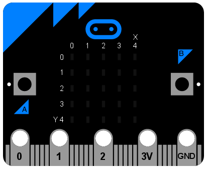
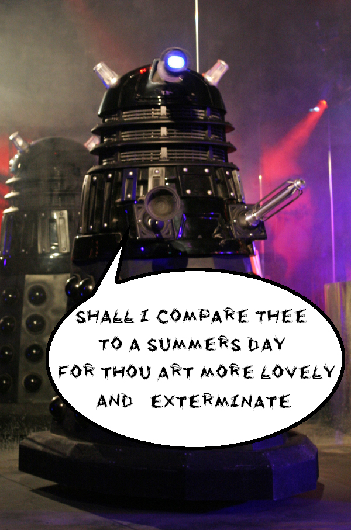

BBC micro:bit documentation MicroPython¶
Bienvenue!
La BBC micro:bit est un petit objet intelligent pour les enfants. Un des langages qu’il comprend est le fameux langage de programmation Python. La version de Python qui tourne sur la BBC micro:bit est appellée MicroPython.
This documentation includes lessons for teachers and API documentation for developers (check out the index on the left). We hope you enjoy developing for the BBC micro:bit using MicroPython.
If you’re a new programmer, teacher or unsure where to start, begin with the tutorials.

To get involved with the community subscribe to the microbit@python.org mailing list (https://mail.python.org/mailman/listinfo/microbit).
Note
This project is under active development. Please help other developers by adding tips, how-tos, and Q&A to this document. Thanks!
Projects related to MicroPython on the BBC micro:bit include:
- Mu - a simple code editor for kids, teachers and beginner programmers. Probably the easiest way for people to program MicroPython on the BBC micro:bit.
- uFlash - a command line tool for flashing raw Python scripts onto a BBC micro:bit.
Introduction¶
We suggest you download and use the mu editor when working through these tutorials. Instructions for downloading and installing Mu are on its website. You may need to install a driver, depending on your platform (instruction are on the website).
Mu works with Windows, OSX and Linux.
Once Mu is installed connect your micro:bit to your computer via a USB lead.
Write your script in the editor window and click the “Flash” button to transfer it to the micro:bit. If it doesn’t work, make sure your micro:bit appears as a USB storage device in your file system explorer.
Hello, World!¶
The traditional way to start programming in a new language is to get your computer to say, “Hello, World!”.

This is easy with MicroPython:
from microbit import *
display.scroll("Hello, World!")
Each line does something special. The first line:
from microbit import *
...tells MicroPython to get all the stuff it needs to work with the BBC
micro:bit. All this stuff is in a module called microbit (a module
is a library of pre-existing code). When you import something you’re telling
MicroPython that you want to use it, and * is Python’s way to say
everything. So, from microbit import * means, in English, “I want to be
able to use everything from the microbit code library”.
The second line:
display.scroll("Hello, World!")
...tells MicroPython to use the display to scroll the string of characters
“Hello, World!”. The display part of that line is an object from the
microbit module that represents the device’s physical display (we say
“object” instead of “thingy”, “whatsit” or “doodah”). We can tell the display
to do things with a full-stop . followed by what looks like a command (in
fact it’s something we call a method). In this case we’re using the
scroll method. Since scroll needs to know what characters to scroll
across the physical display we specify them between double quotes (")
within parenthesis (( and )). These are called the arguments. So,
display.scroll("Hello, World!") means, in English, “I want you to use the
display to scroll the text ‘Hello, World!’”. If a method doesn’t need any
arguments we make this clear by using empty parenthesis like this: ().
Copy the “Hello, World!” code into your editor and flash it onto the device. Can you work out how to change the message? Can you make it say hello to you? For example, I might make it say “Hello, Nicholas!”. Here’s a clue, you need to change the scroll method’s argument.
Warning
It may not work. :-)
This is where things get fun and MicroPython tries to be helpful. If it encounters an error it will scroll a helpful message on the micro:bit’s display. If it can, it will tell you the line number for where the error can be found.
Python expects you to type EXACTLY the right thing. So, for instance,
Microbit, microbit and microBit are all different things to
Python. If MicroPython complains about a NameError it’s probably
because you’ve typed something inaccurately. It’s like the difference
between referring to “Nicholas” and “Nicolas”. They’re two different people
but their names look very similar.
If MicroPython complains about a SyntaxError you’ve simply typed code
in a way that MicroPython can’t understand. Check you’re not missing any
special characters like " or :. It’s like putting. a full stop in
the middle of a sentence. It’s hard to understand exactly what you mean.
Your microbit may stop responding: you cannot flash new code to it or enter commands into the REPL. If this happens, try power cycling it. That is, unplug the USB cable (and battery cable if it’s connected), then plug the cable back in again. You may also need to quit and re-start your code editor application.
Images¶
MicroPython is about as good at art as you can be if the only thing you have is a 5x5 grid of red LEDs (light emitting diodes - the things that light up on the front of the device). MicroPython gives you quite a lot of control over the display so you can create all sorts of interesting effects.
MicroPython comes with lots of built-in pictures to show on the display. For example, to make the device appear happy you type:
from microbit import *
display.show(Image.HAPPY)
I suspect you can remember what the first line does. The second line uses the
display object to show a built-in image. The happy image we want to
display is a part of the Image object and called HAPPY. We tell
show to use it by putting it between the parenthesis (( and )).

Here’s a list of the built-in images:
Image.HEARTImage.HEART_SMALLImage.HAPPYImage.SMILEImage.SADImage.CONFUSEDImage.ANGRYImage.ASLEEPImage.SURPRISEDImage.SILLYImage.FABULOUSImage.MEHImage.YESImage.NOImage.CLOCK12,Image.CLOCK11,Image.CLOCK10,Image.CLOCK9,Image.CLOCK8,Image.CLOCK7,Image.CLOCK6,Image.CLOCK5,Image.CLOCK4,Image.CLOCK3,Image.CLOCK2,Image.CLOCK1Image.ARROW_N,Image.ARROW_NE,Image.ARROW_E,Image.ARROW_SE,Image.ARROW_S,Image.ARROW_SW,Image.ARROW_W,Image.ARROW_NWImage.TRIANGLEImage.TRIANGLE_LEFTImage.CHESSBOARDImage.DIAMONDImage.DIAMOND_SMALLImage.SQUAREImage.SQUARE_SMALLImage.RABBITImage.COWImage.MUSIC_CROTCHETImage.MUSIC_QUAVERImage.MUSIC_QUAVERSImage.PITCHFORKImage.XMASImage.PACMANImage.TARGETImage.TSHIRTImage.ROLLERSKATEImage.DUCKImage.HOUSEImage.TORTOISEImage.BUTTERFLYImage.STICKFIGUREImage.GHOSTImage.SWORDImage.GIRAFFEImage.SKULLImage.UMBRELLAImage.SNAKE
There’s quite a lot! Why not modify the code that makes the micro:bit look
happy to see what some of the other built-in images look like? (Just replace
Image.HAPPY with one of the built-in images listed above.)
DIY Images¶
Of course, you want to make your own image to display on the micro:bit, right?
That’s easy.
Each LED pixel on the physical display can be set to one of ten values. If a
pixel is set to 0 (zero) then it’s off. It literally has zero brightness.
However, if it is set to 9 then it is at its brightest level. The values
1 to 8 represent the brightness levels between off (0) and full on
(9).
Armed with this information, it’s possible to create a new image like this:
from microbit import *
boat = Image("05050:"
"05050:"
"05050:"
"99999:"
"09990")
display.show(boat)
(When run, the device should display an old-fashioned “Blue Peter” sailing ship with the masts dimmer than the boat’s hull.)
Have you figured out how to draw a picture? Have you noticed that each line of
the physical display is represented by a line of numbers ending in : and
enclosed between " double quotes? Each number specifies a brightness.
There are five lines of five numbers so it’s possible to specify the individual
brightness for each of the five pixels on each of the five lines on the
physical display. That’s how to create a new image.
Simple!
In fact, you don’t need to write this over several lines. If you think you can keep track of each line, you can rewrite it like this:
boat = Image("05050:05050:05050:99999:09990")
Animation¶
Static images are fun, but it’s even more fun to make them move. This is also amazingly simple to do with MicroPython ~ just use a list of images!
Here is a shopping list:
Eggs
Bacon
Tomatoes
Here’s how you’d represent this list in Python:
shopping = ["Eggs", "Bacon", "Tomatoes" ]
I’ve simply created a list called shopping and it contains three items.
Python knows it’s a list because it’s enclosed in square brackets ([ and
]). Items in the list are separated by a comma (,) and in this instance
the items are three strings of characters: "Eggs", "Bacon" and
"Tomatoes". We know they are strings of characters because they’re enclosed
in quotation marks ".
You can store anything in a list with Python. Here’s a list of numbers:
primes = [2, 3, 5, 7, 11, 13, 17, 19]
Note
Numbers don’t need to be quoted since they represent a value (rather than a
string of characters). It’s the difference between 2 (the numeric value
2) and "2" (the character/digit representing the number 2). Don’t worry
if this doesn’t make sense right now. You’ll soon get used to it.
It’s even possible to store different sorts of things in the same list:
mixed_up_list = ["hello!", 1.234, Image.HAPPY]
Notice that last item? It was an image!
We can tell MicroPython to animate a list of images. Luckily we have a
couple of lists of images already built in. They’re called Image.ALL_CLOCKS
and Image.ALL_ARROWS:
from microbit import *
display.show(Image.ALL_CLOCKS, loop=True, delay=100)
As with a single image, we use display.show to show it on the
device’s display. However, we tell MicroPython to use Image.ALL_CLOCKS and
it understands that it needs to show each image in the list, one after the
other. We also tell MicroPython to keep looping over the list of images (so
the animation lasts forever) by saying loop=True. Furthermore, we tell it
that we want the delay between each image to be only 100 milliseconds (a tenth
of a second) with the argument delay=100.
Can you work out how to animate over the Image.ALL_ARROWS list? How do you
avoid looping forever (hint: the opposite of True is False although
the default value for loop is False)? Can you change the speed of the
animation?
Finally, here’s how to create your own animation. In my example I’m going to make my boat sink into the bottom of the display:
from microbit import *
boat1 = Image("05050:"
"05050:"
"05050:"
"99999:"
"09990")
boat2 = Image("00000:"
"05050:"
"05050:"
"05050:"
"99999")
boat3 = Image("00000:"
"00000:"
"05050:"
"05050:"
"05050")
boat4 = Image("00000:"
"00000:"
"00000:"
"05050:"
"05050")
boat5 = Image("00000:"
"00000:"
"00000:"
"00000:"
"05050")
boat6 = Image("00000:"
"00000:"
"00000:"
"00000:"
"00000")
all_boats = [boat1, boat2, boat3, boat4, boat5, boat6]
display.show(all_boats, delay=200)
Here’s how the code works:
- I create six
boatimages in exactly the same way I described above. - Then, I put them all into a list that I call
all_boats. - Finally, I ask
display.showto animate the list with a delay of 200 milliseconds. - Since I’ve not set
loop=Truethe boat will only sink once (thus making my animation scientifically accurate). :-)
What would you animate? Can you animate special effects? How would you make an image fade out and then fade in again?
Buttons¶
So far we have created code that makes the device do something. This is called output. However, we also need the device to react to things. Such things are called inputs.
It’s easy to remember: output is what the device puts out to the world whereas input is what goes into the device for it to process.
The most obvious means of input on the micro:bit are its two buttons, labelled
A and B. Somehow, we need MicroPython to react to button presses.
This is remarkably simple:
from microbit import *
sleep(10000)
display.scroll(str(button_a.get_presses()))
All this script does is sleep for ten thousand milliseconds (i.e. 10 seconds)
and then scrolls the number of times you pressed button A. That’s it!
While it’s a pretty useless script, it introduces a couple of interesting new ideas:
- The
sleepfunction will make the micro:bit sleep for a certain number of milliseconds. If you want a pause in your program, this is how to do it. A function is just like a method, but it isn’t attached by a dot to an object. - There is an object called
button_aand it allows you to get the number of times it has been pressed with theget_pressesmethod.
Since get_presses gives a numeric value and display.scroll only
displays characters, we need to convert the numeric value into a string of
characters. We do this with the str function (short for “string” ~ it
converts things into strings of characters).
The third line is a bit like an onion. If the parenthesis are the
onion skins then you’ll notice that display.scroll contains str that
itself contains button_a.get_presses. Python attempts to work out the
inner-most answer first before starting on the next layer out. This is called
nesting - the coding equivalent of a Russian Matrioshka doll.

Let’s pretend you’ve pressed the button 10 times. Here’s how Python works out what’s happening on the third line:
Python sees the complete line and gets the value of get_presses:
display.scroll(str(button_a.get_presses()))
Now that Python knows how many button presses there have been, it converts the numeric value into a string of characters:
display.scroll(str(10))
Finally, Python knows what to scroll across the display:
display.scroll("10")
While this might seem like a lot of work, MicroPython makes this happen extraordinarily fast.
Event Loops¶
Often you need your program to hang around waiting for something to happen. To do this you make it loop around a piece of code that defines how to react to certain expected events such as a button press.
To make loops in Python you use the while keyword. It checks if something
is True. If it is, it runs a block of code called the body of the loop.
If it isn’t, it breaks out of the loop (ignoring the body) and the rest of the
program can continue.
Python makes it easy to define blocks of code. Say I have a to-do list written on a piece of paper. It probably looks something like this:
Shopping
Fix broken gutter
Mow the lawn
If I wanted to break down my to-do list a bit further, I might write something like this:
Shopping:
Eggs
Bacon
Tomatoes
Fix broken gutter:
Borrow ladder from next door
Find hammer and nails
Return ladder
Mow the lawn:
Check lawn around pond for frogs
Check mower fuel level
It’s obvious that the main tasks are broken down into sub-tasks that are
indented underneath the main task to which they are related. So Eggs,
Bacon and Tomatoes are obviously related to Shopping. By indenting
things we make it easy to see, at a glance, how the tasks relate to each other.
This is called nesting. We use nesting to define blocks of code like this:
from microbit import *
while running_time() < 10000:
display.show(Image.ASLEEP)
display.show(Image.SURPRISED)
The running_time function returns the number of milliseconds since the
device started.
The while running_time() < 10000: line checks if the running time is less
than 10000 milliseconds (i.e. 10 seconds). If it is, and this is where we can
see scoping in action, then it’ll display Image.ASLEEP. Notice how this is
indented underneath the while statement just like in our to-do list.
Obviously, if the running time is equal to or greater than 10000 milliseconds
then the display will show Image.SURPRISED. Why? Because the while
condition will be False (running_time is no longer < 10000). In that
case the loop is finished and the program will continue after the while
loop’s block of code. It’ll look like your device is asleep for 10
seconds before waking up with a surprised look on its face.
Try it!
Handling an Event¶
If we want MicroPython to react to button press events we should put it into
an infinite loop and check if the button is_pressed.
An infinite loop is easy:
while True:
# Do stuff
(Remember, while checks if something is True to work out if it should
run its block of code. Since True is obviously True for all time, you
get an infinite loop!)
Let’s make a very simple cyber-pet. It’s always sad unless you’re pressing
button A. If you press button B it dies. (I realise this isn’t a very
pleasant game, so perhaps you can figure out how to improve it.):
from microbit import *
while True:
if button_a.is_pressed():
display.show(Image.HAPPY)
elif button_b.is_pressed():
break
else:
display.show(Image.SAD)
display.clear()
Can you see how we check what buttons are pressed? We used if,
elif (short for “else if”) and else. These are called conditionals
and work like this:
if something is True:
# do one thing
elif some other thing is True:
# do another thing
else:
# do yet another thing.
This is remarkably similar to English!
The is_pressed method only produces two results: True or False.
If you’re pressing the button it returns True, otherwise it returns
False. The code above is saying, in English, “for ever and ever, if
button A is pressed then show a happy face, else if button B is pressed break
out of the loop, otherwise display a sad face.” We break out of the loop (stop
the program running for ever and ever) with the break statement.
At the very end, when the cyber-pet is dead, we clear the display.
Can you think of ways to make this game less tragic? How would you check if
both buttons are pressed? (Hint: Python has and, or and not
logical operators to help check multiple truth statements (things that
produce either True or False results).
Input/Output¶
There are strips of metal along the bottom edge of the BBC micro:bit that make it look as if the device has teeth. These are the input/output pins (or I/O pins for short).
Some of the pins are bigger than others so it’s possible to attach crocodile clips to them. These are the ones labelled 0, 1, 2, 3V and GND (computers always start counting from zero). If you attach an edge connector board to the device it’s possible to plug in wires connected to the other (smaller) pins.
Each pin on the BBC micro:bit is represented by an object called pinN
where N is the pin number. So, for example, to do things with the pin
labelled with a 0 (zero), use the object called pin0.
Simple!
These objects have various methods associated with them depending upon what the specific pin is capable of.
Ticklish Python¶
The simplest example of input via the pins is a check to see if they are touched. So, you can tickle your device to make it laugh like this:
from microbit import *
while True:
if pin0.is_touched():
display.show(Image.HAPPY)
else:
display.show(Image.SAD)
With one hand, hold your device by the GND pin. Then, with your other hand, touch (or tickle) the 0 (zero) pin. You should see the display change from grumpy to happy!
This is a form of very basic input measurement. However, the fun really starts when you plug in circuits and other devices via the pins.
Bleeps and Bloops¶
The simplest thing we can attach to the device is a Piezo buzzer. We’re going to use it for output.

These small devices play a high-pitched bleep when connected to a circuit. To attach one to your BBC micro:bit you should attach crocodile clips to pin 0 and GND (as shown below).

The wire from pin 0 should be attached to the positive connector on the buzzer and the wire from GND to the negative connector.
The following program will cause the buzzer to make a sound:
from microbit import *
pin0.write_digital(1)
This is fun for about 5 seconds and then you’ll want to make the horrible squeaking stop. Let’s improve our example and make the device bleep:
from microbit import *
while True:
pin0.write_digital(1)
sleep(20)
pin0.write_digital(0)
sleep(480)
Can you work out how this script works? Remember that 1 is “on” and 0
is “off” in the digital world.
The device is put into an infinite loop and immediately switches pin 0 on. This causes the buzzer to emit a beep. While the buzzer is beeping, the device sleeps for twenty milliseconds and then switches pin 0 off. This gives the effect of a short bleep. Finally, the device sleeps for 480 milliseconds before looping back and starting all over again. This means you’ll get two bleeps per second (one every 500 milliseconds).
We’ve made a very simple metronome!
Music¶
MicroPython on the BBC micro:bit comes with a powerful music and sound module. It’s very easy to generate bleeps and bloops from the device if you attach a speaker. Use crocodile clips to attach pin 0 and GND to the positive and negative inputs on the speaker - it doesn’t matter which way round they are connected to the speaker.
Note
Do not attempt this with a Piezo buzzer - such buzzers are only able to play a single tone.
Let’s play some music:
import music
music.play(music.NYAN)
Notice that we import the music module. It contains methods used to make
and control sound.
MicroPython has quite a lot of built-in melodies. Here’s a complete list:
music.DADADADUMmusic.ENTERTAINERmusic.PRELUDEmusic.ODEmusic.NYANmusic.RINGTONEmusic.FUNKmusic.BLUESmusic.BIRTHDAYmusic.WEDDINGmusic.FUNERALmusic.PUNCHLINEmusic.PYTHONmusic.BADDYmusic.CHASEmusic.BA_DINGmusic.WAWAWAWAAmusic.JUMP_UPmusic.JUMP_DOWNmusic.POWER_UPmusic.POWER_DOWN
Take the example code and change the melody. Which one is your favourite? How would you use such tunes as signals or cues?
Wolfgang Amadeus Microbit¶
Creating your own tunes is easy!
Each note has a name (like C# or F), an octave (telling MicroPython how
high or low the note should be played) and a duration (how
long it lasts through time). Octaves are indicated by a number ~ 0 is the
lowest octave, 4 contains middle C and 8 is about as high as you’ll ever need
unless you’re making music for dogs. Durations are also expressed as numbers.
The higher the value of the duration the longer it will last. Such
values are related to each other - for instance, a duration of 4 will last
twice as long as a duration 2 (and so on). If you use the note name R
then MicroPython will play a rest (i.e. silence) for the specified duration.
Each note is expressed as a string of characters like this:
NOTE[octave][:duration]
For example, "A1:4" refers to the note named A in octave number 1
to be played for a duration of 4.
Make a list of notes to create a melody (it’s equivalent to creating an animation with a list of images). For example, here’s how to make MicroPython play opening of “Frere Jaques”:
import music
tune = ["C4:4", "D4:4", "E4:4", "C4:4", "C4:4", "D4:4", "E4:4", "C4:4",
"E4:4", "F4:4", "G4:8", "E4:4", "F4:4", "G4:8"]
music.play(tune)
Note
MicroPython helps you to simplify such melodies. It’ll remember the octave and duration values until you next change them. As a result, the example above can be re-written as:
import music
tune = ["C4:4", "D", "E", "C", "C", "D", "E", "C", "E", "F", "G:8",
"E:4", "F", "G:8"]
music.play(tune)
Notice how the octave and duration values only change when they have to. It’s a lot less typing and simpler to read.
Sound Effects¶
MicroPython lets you make tones that are not musical notes. For example, here’s how to create a Police siren effect:
import music
while True:
for freq in range(880, 1760, 16):
music.pitch(freq, 6)
for freq in range(1760, 880, -16):
music.pitch(freq, 6)
Notice how the music.pitch method is used in this instance. It expects a
frequency. For example, the frequency of 440 is the same as a concert A
used to tune a symphony orchestra.
In the example above the range function is used to generate ranges of
numeric values. These numbers are used to define the pitch of the tone. The
three arguments for the range function are the start value, end value and
step size. Therefore, the first use of range is saying, in English, “create
a range of numbers between 880 and 1760 in steps of 16”. The second use of
range is saying, “create a range of values between 1760 and 880 in steps of
-16”. This is how we get a range of frequencies that go up and down in pitch
like a siren.
Because the siren should last forever it’s wrapped in an infinite while
loop.
Importantly, we have introduced a new sort of a loop inside the while
loop: the for loop. In English it’s like saying, “for each item in some
collection, do some activity with it”. Specifically in the example above, it’s
saying, “for each frequency in the specified range of frequencies, play the
pitch of that frequency for 6 milliseconds”. Notice how the thing to do for
each item in a for loop is indented (as discussed earlier) so Python knows
exactly which code to run to handle the individual items.
Random¶
Sometimes you want to leave things to chance, or mix it up a little: you want the device to act randomly.
MicroPython comes with a random module to make it easy to introduce chance
and a little chaos into your code. For example, here’s how to scroll a random
name across the display:
from microbit import *
import random
names = ["Mary", "Yolanda", "Damien", "Alia", "Kushal", "Mei Xiu", "Zoltan" ]
display.scroll(random.choice(names))
The list (names) contains seven names defined as strings of characters.
The final line is nested (the “onion” effect introduced earlier): the
random.choice method takes the names list as an argument and returns
an item chosen at random. This item (the randomly chosen name) is the argument
for display.scroll.
Can you modify the list to include your own set of names?
Random Numbers¶
Random numbers are very useful. They’re common in games. Why else do we have dice?
MicroPython comes with several useful random number methods. Here’s how to make a simple dice:
from microbit import *
import random
display.show(str(random.randint(1, 6)))
Every time the device is reset it displays a number between 1 and 6. You’re
starting to get familiar with nesting, so it’s important to note that
random.randint returns a whole number between the two arguments, inclusive
(a whole number is also called an integer - hence the name of the method).
Notice that because display.show expects a character then we use the
str function to turn the numeric value into a character (we turn, for
example, 6 into "6").
If you know you’ll always want a number between 0 and N then use the
random.randrange method. If you give it a single argument it’ll return
random integers up to, but not including, the value of the argument N
(this is different to the behaviour of random.randint).
Sometimes you need numbers with a decimal point in them. These are called
floating point numbers and it’s possible to generate such a number with the
random.random method. This only returns values between 0.0 and 1.0
inclusive. If you need larger random floating point numbers add the results
of random.randrange and random.random like this:
from microbit import *
import random
answer = random.randrange(100) + random.random()
display.scroll(str(answer))
Seeds of Chaos¶
The random number generators used by computers are not truly random. They just give random like results given a starting seed value. The seed is often generated from random-ish values such as the current time and/or readings from sensors such as the thermometers built into chips.
Sometimes you want to have repeatable random-ish behaviour: a source of randomness that is reproducible. It’s like saying that you need the same five random values each time you throw a dice.
This is easy to achieve by setting the seed value. Given a known seed the
random number generator will create the same set of random numbers. The seed is
set with random.seed and any whole number (integer). This version of the
dice program always produces the same results:
from microbit import *
import random
random.seed(1337)
while True:
if button_a.was_pressed():
display.show(str(random.randint(1, 6)))
Can you work out why this program needs us to press button A instead of reset the device as in the first dice example..?
Movement¶
Your BBC micro:bit comes with an accelerometer. It measures movement along three axes:
- X - tilting from left to right.
- Y - tilting forwards and backwards.
- Z - moving up and down.
There is a method for each axis that returns a positive or negative number indicating a measurement in milli-g’s. When the reading is 0 you are “level” along that particular axis.
For example, here’s a very simple spirit-level that uses get_x to measure
how level the device is along the X axis:
from microbit import *
while True:
reading = accelerometer.get_x()
if reading > 20:
display.show("R")
elif reading < -20:
display.show("L")
else:
display.show("-")
If you hold the device flat it should display -; however, rotate it left or
right and it’ll show L and R respectively.
We want the device to constantly react to change, so we use an
infinite while loop. The first thing to happen within the body of the
loop is a measurement along the X axis which is called reading. Because
the accelerometer is so sensitive I’ve made level +/-20 in range. It’s why
the if and elif conditionals check for > 20 and < -20. The
else statement means that if the reading is between -20 and 20 then
we consider it level. For each of these conditions we use the display to show
the appropriate character.
There is also a get_y method for the Y axis and a get_z method for the
Z axis.
If you’ve ever wondered how a mobile phone knows which up to show the images on its screen, it’s because it uses an accelerometer in exactly the same way as the program above. Game controllers also contain accelerometers to help you steer and move around in games.
Musical Mayhem¶
One of the most wonderful aspects of MicroPython on the BBC micro:bit is how it lets you easily link different capabilities of the device together. For example, let’s turn it into a musical instrument (of sorts).
Connect a speaker as you did in the music tutorial. Use crocodile clips to attach pin 0 and GND to the positive and negative inputs on the speaker - it doesn’t matter which way round they are connected to the speaker.
What happens if we take the readings from the accelerometer and play them as pitches? Let’s find out:
from microbit import *
import music
while True:
music.pitch(accelerometer.get_y(), 10)
The key line is at the end and remarkably simple. We nest the reading from
the Y axis as the frequency to feed into the music.pitch method. We only
let it play for 10 milliseconds because we want the tone to change quickly as
the device is tipped. Because the device is in an infinite while loop it
is constantly reacting to changes in the Y axis measurement.
That’s it!
Tip the device forwards and backwards. If the reading along the Y axis is positive it’ll change the pitch of the tone played by the micro:bit.
Imagine a whole symphony orchestra of these devices. Can you play a tune? How would you improve the program to make the micro:bit sound more musical?
Gestures¶
The really interesting side-effect of having an accelerometer is gesture detection. If you move your BBC micro:bit in a certain way (as a gesture) then MicroPython is able to detect this.
MicroPython is able to recognise the following gestures: up, down,
left, right, face up, face down, freefall, 3g, 6g,
8g, shake. Gestures are always represented as strings. While most of
the names should be obvious, the 3g, 6g and 8g gestures apply when
the device encounters these levels of g-force (like when an astronaut is
launched into space).
To get the current gesture use the accelerometer.current_gesture method.
Its result is going to be one of the named gestures listed above. For example,
this program will only make your device happy if it is face up:
from microbit import *
while True:
gesture = accelerometer.current_gesture()
if gesture == "face up":
display.show(Image.HAPPY)
else:
display.show(Image.ANGRY)
Once again, because we want the device to react to changing circumstances we
use a while loop. Within the scope of the loop the current gesture is
read and put into gesture. The if conditional checks if gesture is
equal to "face up" (Python uses == to test for equality, a single
equals sign = is used for assignment - just like how we assign the gesture
reading to the gesture object). If the gesture is equal to "face up"
then use the display to show a happy face. Otherwise, the device is made to
look angry!
Magic-8¶
A Magic-8 ball is a toy first invented in the 1950s. The idea is to ask it a yes/no question, shake it and wait for it to reveal the truth. It’s rather easy to turn into a program:
from microbit import *
import random
answers = [
"It is certain",
"It is decidedly so",
"Without a doubt",
"Yes, definitely",
"You may rely on it",
"As I see it, yes",
"Most likely",
"Outlook good",
"Yes",
"Signs point to yes",
"Reply hazy try again",
"Ask again later",
"Better not tell you now",
"Cannot predict now",
"Concentrate and ask again",
"Don't count on it"
"My reply is no",
"My sources say no",
"Outlook not so good",
"Very doubtful",
]
while True:
display.show("8")
if accelerometer.was_gesture("shake"):
display.clear()
sleep(1000)
display.scroll(random.choice(answers))
Most of the program is a list called answers. The actual game is in the
while loop at the end.
The default state of the game is to show the character "8". However, the
program needs to detect if it has been shaken. The was_gesture method uses
its argument (in this case, the string "shake" because we want to detect
a shake) to return a True / False response. If the device was shaken
the if conditional drops into its block of code where it clears the screen,
waits for a second (so the device appears to be thinking about your question)
and displays a randomly chosen answer.
Why not ask it if this is the greatest program ever written? What could you do to “cheat” and make the answer always positive or negative? (Hint: use the buttons.)
Direction¶
There is a compass on the BBC micro:bit. If you ever make a weather station use the device to work out the wind direction.
Compass¶
It can also tell you the direction of North like this:
from microbit import *
compass.calibrate()
while True:
needle = ((15 - compass.heading()) // 30) % 12
display.show(Image.ALL_CLOCKS[needle])
Note
You must calibrate the compass before taking readings. Failure to do so
will produce garbage results. The calibration method runs a fun little
game to help the device work out where it is in relation to the Earth’s
magnetic field.
To calibrate the compass, tilt the micro:bit around until a circle of pixels is drawn on the outside edges of the display.
The program takes the compass.heading and, using some simple yet
cunning maths, floor division // and modulo %, works out the number of the clock hand to use to display on the screen
so that it is pointing roughly North.
Storage¶
Sometimes you need to store useful information. Such information is stored as data: representation of information (in a digital form when stored on computers). If you store data on a computer it should persist, even if you switch the device off and on again.
Happily MicroPython on the micro:bit allows you to do this with a very simple file system. Because of memory constraints there is approximately 30k of storage available on the file system.
What is a file system?
It’s a means of storing and organising data in a persistent manner - any data stored in a file system should survive restarts of the device. As the name suggests, data stored on a file system is organised into files.

A computer file is a named digital resource that’s stored on a file system.
Such resources contain useful information as data. This is exactly how a
paper file works. It’s a sort of named container that contains useful
information. Usually, both paper and digital files are named to indicate what
they contain. On computers it is common to end a file with a .something
suffix. Usually, the “something” indicates what type of data is used to
represent the information. For example, .txt indicates a text file,
.jpg a JPEG image and .mp3 sound data encoded as MP3.
Some file systems (such as the one found on your laptop or PC) allow you to organise your files into directories: named containers that group related files and sub-directories together. However, the file system provided by MicroPython is a flat file system. A flat file system does not have directories - all your files are just stored in the same place.
The Python programming language contains easy to use and powerful ways in which to work with a computer’s file system. MicroPython on the micro:bit implements a useful subset of these features to make is easy to read and write files on the device, while also providing consistency with other versions of Python.
Warning
Flashing your micro:bit will DESTROY ALL YOUR DATA since it re-writes all the flash memory used by the device and the file system is stored in the flash memory.
However, if you switch off your device the data will remain intact until you either delete it or re-flash the device.
Open Sesame¶
Reading and writing a file on the file system is achieved by the open
function. Once a file is opened you can do stuff with it until you close it
(analogous with the way we use paper files). It is essential you close a file
so MicroPython knows you’ve finished with it.
The best way to make sure of this is to use the with statement like this:
with open('story.txt') as my_file:
content = my_file.read()
print(content)
The with statement uses the open function to open a file and assign it
to an object. In the example above, the open function opens the file called
story.txt (obviously a text file containing a story of some sort).
The object that’s used to represent the file in the Python code is called
my_file. Subsequently, in the code block indented underneath the with
statement, the my_file object is used to read() the content of the
file and assign it to the content object.
Here’s the important point, the next line containing the print statement
is not indented. The code block associated with the with statement is only
the single line that reads the file. Once the code block associated with the
with statement is closed then Python (and MicroPython) will automatically
close the file for you. This is called context handling and the open
function creates objects that are context handlers for files.
Put simply, the scope of your interaction with a file is defined by the code
block associated with the with statement that opens the file.
Confused?
Don’t be. I’m simply saying your code should look like this:
with open('some_file') as some_object:
# Do stuff with some_object in this block of code
# associated with the with statement.
# When the block is finished then MicroPython
# automatically closes the file for you.
Just like a paper file, a digital file is opened for two reasons: to read its
content (as demonstrated above) or to write something to the file. The default
mode is to read the file. If you want to write to a file you need to tell the
open function in the following way:
with open('hello.txt', 'w') as my_file:
my_file.write("Hello, World!")
Notice the 'w' argument is used to set the my_file object into write
mode. You could also pass an 'r' argument to set the file object to read
mode, but since this is the default, it’s often left off.
Writing data to the file is done with the (you guessed it) write
method that takes the string you want to write to the file as an argument. In
the example above, I write the text “Hello, World!” to a file called
“hello.txt”.
Simple!
Note
When you open a file and write (perhaps several times while the file is in an open state) you will be writing OVER the content of the file if it already exists.
If you want to append data to a file you should first read it, store the content somewhere, close it, append your data to the content and then open it to write again with the revised content.
While this is the case in MicroPython, “normal” Python can open files to write in “append” mode. That we can’t do this on the micro:bit is a result of the simple implementation of the file system.
OS SOS¶
As well as reading and writing files, Python can manipulate them. You certainly need to know what files are on the file system and sometimes you need to delete them too.
On a regular computer, it is the role of the operating system (like Windows,
OSX or Linux) to manage this on Python’s behalf. Such functionality is made
available in Python via a module called os. Since MicroPython is the
operating system we’ve decided to keep the appropriate functions in the os
module for consistency so you’ll know where to find them when you use “regular”
Python on a device like a laptop or Raspberry Pi.
Essentially, you can do three operations related to the file system: list the files, remove a file and ask for the size of a file.
To list the files on your file system use the listdir function. It
returns a list of strings indicating the file names of the files on the file
system:
import os
my_files = os.listdir()
To delete a file use the remove function. It takes a string representing
the file name of the file you want to delete as an argument, like this:
import os
os.remove('filename.txt')
Finally, sometimes it’s useful to know how big a file is before reading from
it. To achieve this use the size function. Like the remove function, it
takes a string representing the file name of the file whose size you want to
know. It returns an integer (whole number) telling you the number of bytes the
file takes up:
import os
file_size = os.size('a_big_file.txt')
It’s all very well having a file system, but what if we want to put or get files on or off the device?
Just use the microfs utility!
File Transfer¶
If you have Python installed on the computer you use to program your BBC
micro:bit then you can use a special utility called microfs (shortened to
ufs when using it in the command line). Full instructions for installing
and using all the features of microfs can be found
in its documentation.
Nevertheless it’s possible to do most of the things you need with just four simple commands:
$ ufs ls
story.txt
The ls sub-command lists the files on the file system (it’s named after
the common Unix command, ls, that serves the same function).
$ ufs get story.txt
The get sub-command gets a file from the connected micro:bit and saves it
into your current location on your computer (it’s named after the get
command that’s part of the common file transfer protocol [FTP] that serves the
same function).
$ ufs rm story.txt
The rm sub-command removes the named from from the file system on the
connected micro:bit (it’s named after the common Unix command, rm, that
serves the same function).
$ ufs put story2.txt
Finally, the put sub-command puts a file from your computer onto the
connected device (it’s named after the put command that’s part of FTP that
serves the same function).
Mainly main.py¶
The file system also has an interesting property: if you just flashed the
MicroPython runtime onto the device then when it starts it’s simply waiting
for something to do. However, if you copy a special file called main.py
onto the file system, upon restarting the device, MicroPython will run the
contents of the main.py file.
Furthermore, if you copy other Python files onto the file system then you can
import them as you would any other Python module. For example, if you had
a hello.py file that contained the following simple code:
def say_hello(name="World"):
return "Hello, {}!".format(name)
...you could import and use the say_hello function like this:
from microbit import display
from hello import say_hello
display.scroll(say_hello())
Of course, it results in the text “Hello, World!” scrolling across the
display. The important point is that such an example is split between two
Python modules and the import statement is used to share code.
Note
If you have flashed a script onto the device in addition to the MicroPython
runtime, then MicroPython will ignore main.py and run your embedded
script instead.
To flash just the MicroPython runtime, simply make sure the script you
may have written in your editor has zero characters in it. Once flashed
you’ll be able to copy over a main.py file.
Speech¶
Warning
WARNING! THIS IS ALPHA CODE.
We reserve the right to change this API as development continues.
The quality of the speech is not great, merely “good enough”. Given the constraints of the device you may encounter memory errors and / or unexpected extra sounds during playback. It’s early days and we’re improving the code for the speech synthesiser all the time. Bug reports and pull requests are most welcome.
Computers and robots that talk feel more “human”.
So often we learn about what a computer is up to through a graphical user interface (GUI). In the case of a BBC micro:bit the GUI is a 5x5 LED matrix, which leaves a lot to be desired.
Getting the micro:bit talk to you is one way to express information in a fun, efficient and useful way. To this end, we have integrated a simple speech synthesiser based upon a reverse-engineered version of a synthesiser from the early 1980s. It sounds very cute, in an “all humans must die” sort of a way.
With this in mind, we’re going to use the speech synthesiser to create...
DALEK Poetry¶
It’s a little known fact that DALEKs enjoy poetry ~ especially limericks. They go wild for anapestic meter with a strict AABBA form. Who’d have thought?
(Actually, as we’ll learn below, it’s The Doctor’s fault DALEKs like limericks, much to the annoyance of Davros.)
In any case, we’re going to create a DALEK poetry recital on demand.
Say Something¶
Before the device can talk you need to plug in a speaker like this:

The simplest way to get the device to speak is to import the speech module
and use the say function like this:
import speech
speech.say("Hello, World")
While this is cute it’s certainly not DALEK enough for our taste, so we need to change some of the parameters that the speech synthesiser uses to produce the voice. Our speech synthesiser is quite powerful in this respect because we can change four parameters:
pitch- how high or low the voice sounds (0 = high, 255 = Barry White)speed- how quickly the device talks (0 = impossible, 255 = bedtime story)mouth- how tight-lipped or overtly enunciating the voice sounds (0 = ventriloquist’s dummy, 255 = Foghorn Leghorn)throat- how relaxed or tense is the tone of voice (0 = falling apart, 255 = totally chilled)
Collectively, these parameters control the quality of sound - a.k.a. the timbre. To be honest, the best way to get the tone of voice you want is to experiment, use your judgement and adjust.
To adjust the settings you pass them in as arguments to the say function.
More details can be found in the speech module’s API documentation.
After some experimentation we’ve worked out this sounds quite DALEK-esque:
speech.say("I am a DALEK - EXTERMINATE", speed=120, pitch=100, throat=100, mouth=200)
Poetry on Demand¶
Being Cyborgs DALEKs use their robot capabilities to compose poetry and it turns out that the algorithm they use is written in Python like this:
# DALEK poetry generator, by The Doctor
import speech
import random
from microbit import sleep
# Randomly select fragments to interpolate into the template.
location = random.choice(["brent", "trent", "kent", "tashkent"])
action = random.choice(["wrapped up", "covered", "sang to", "played games with"])
obj = random.choice(["head", "hand", "dog", "foot"])
prop = random.choice(["in a tent", "with cement", "with some scent",
"that was bent"])
result = random.choice(["it ran off", "it glowed", "it blew up",
"it turned blue"])
attitude = random.choice(["in the park", "like a shark", "for a lark",
"with a bark"])
conclusion = random.choice(["where it went", "its intent", "why it went",
"what it meant"])
# A template of the poem. The {} are replaced by the named fragments.
poem = [
"there was a young man from {}".format(location),
"who {} his {} {}".format(action, obj, prop),
"one night after dark",
"{} {}".format(result, attitude),
"and he never worked out {}".format(conclusion),
"EXTERMINATE",
]
# Loop over each line in the poem and use the speech module to recite it.
for line in poem:
speech.say(line, speed=120, pitch=100, throat=100, mouth=200)
sleep(500)
As the comments demonstrate, it’s a very simple in design:
- Named fragments (
location,prop,attitudeetc) are randomly generated from pre-defined lists of possible values. Note the use ofrandom.choiceto select a single item from a list. - A template of a poem is defined as a list of stanzas with “holes” in them (denoted by
{}) into which the named fragments will be put using theformatmethod. - Finally, Python loops over each item in the list of filled-in poetry stanzas and uses
speech.saywith the settings for the DALEK voice to recite the poem. A pause of 500 milliseconds is inserted between each line because even DALEKs need to take a breath.
Interestingly the original poetry related routines were written by Davros in FORTRAN (an appropriate language for DALEKS since you type it ALL IN CAPITAL LETTERS). However, The Doctor went back in time to precisely the point between Davros’s unit tests passing and the deployment pipeline kicking in. At this instant he was able to insert a MicroPython interpreter into the DALEK operating system and the code you see above into the DALEK memory banks as a sort of long hidden Time-Lord Easter Egg or Rickroll.
Phonemes¶
You’ll notice that sometimes, the say function doesn’t accurately translate
from English words into the correct sound. To have fine grained control of the
output, use phonemes: the building-block sounds of language.
The advantage of using phonemes is that you don’t have to know how to spell! Rather, you only have to know how to say the word in order to spell it phonetically.
A full list of the phonemes the speech synthesiser understands can be found in
the API documentation for speech. Alternatively, save yourself a lot of time by
passing in English words to the translate function. It’ll return a first
approximation of the phonemes it would use to generate the audio. This result
can be hand-edited to improve the accuracy, inflection and emphasis (so it
sounds more natural).
The pronounce function is used for phoneme output like this:
speech.pronounce("/HEH5EH4EH3EH2EH2EH3EH4EH5EHLP.”)
How could you improve on The Doctor’s code to make it use phonemes?
Sing A Song of Micro:bit¶
By changing the pitch setting and calling the sing function it’s
possible to make the device sing (although it’s not going to win Eurovision any
time soon).
The mapping from pitch numbers to musical notes is shown below:

The sing function must take phonemes and pitch as input like this:
speech.sing("#115DOWWWW")
Notice how the pitch to be sung is prepended to the phoneme with a hash
(#). The pitch will remain the same for subsequent phonemes until a new
pitch is annotated.
The following example demonstrates how all three generative functions (say,
pronounce and sing) can be used to produce speech like output:
import speech
from microbit import sleep
# The say method attempts to convert English into phonemes.
speech.say("I can sing!")
sleep(1000)
speech.say("Listen to me!")
sleep(1000)
# Clearing the throat requires the use of phonemes. Changing
# the pitch and speed also helps create the right effect.
speech.pronounce("AEAE/HAEMM", pitch=200, speed=100) # Ahem
sleep(1000)
# Singing requires a phoneme with an annotated pitch for each syllable.
solfa = [
"#115DOWWWWWW", # Doh
"#103REYYYYYY", # Re
"#94MIYYYYYY", # Mi
"#88FAOAOAOAOR", # Fa
"#78SOHWWWWW", # Soh
"#70LAOAOAOAOR", # La
"#62TIYYYYYY", # Ti
"#58DOWWWWWW", # Doh
]
# Sing the scale ascending in pitch.
song = ''.join(solfa)
speech.sing(song, speed=100)
# Reverse the list of syllables.
solfa.reverse()
song = ''.join(solfa)
# Sing the scale descending in pitch.
speech.sing(song, speed=100)
Network¶
It is possible to connect devices together to send and receive messages to and from each other. This is called a network. A network of interconnected networks is called an internet. The Internet is an internet of all the internets.
Networking is hard and this is reflected in the program described below. However, the beautiful thing about this project is it contains all the common aspects of network programming you need to know about. It’s also remarkably simple and fun.
But first, let’s set the scene...
Connection¶
Imagine a network as a series of layers. At the very bottom is the most fundamental aspect of communication: there needs to be some sort of way for a signal to get from one device to the other. Sometimes this is done via a radio connection, but in this example we’re simply going to use two wires.

It is upon this foundation that we can build all the other layers in the network stack.
As the diagram shows, blue and red micro:bits are connected via crocodile leads. Both use pin 1 for output and pin 2 for input. The output from one device is connected to the input on the other. It’s a bit like knowing which way round to hold a telephone handset - one end has a microphone (the input) and the other a speaker (the output). The recording of your voice via your microphone is played out of the other person’s speaker. If you hold the phone the wrong way up, you’ll get strange results!
It’s exactly the same in this instance: you must connect the wires properly!
Signal¶
The next layer in the network stack is the signal. Often this will depend upon the characteristics of the connection. In our example it’s simply digital on and off signals sent down the wires via the IO pins.
If you remember, it’s possible to use the IO pins like this:
pin1.write_digital(1) # switch the signal on
pin1.write_digital(0) # switch the signal off
input = pin2.read_digital() # read the value of the signal (either 1 or 0)
The next step involves describing how to use and handle a signal. For that we need a...
Protocol¶
If you ever meet the Queen there are expectations about how you ought to behave. For example, when she arrives you may bow or curtsey, if she offers her hand politely shake it, refer to her as “your majesty” and thereafter as “ma’am” and so on. This set of rules is called the royal protocol. A protocol explains how to behave given a specific situation (such as meeting the Queen). A protocol is pre-defined to ensure everyone understands what’s going on before a given situation arises.

It is for this reason that we define and use protocols for communicating messages via a computer network. Computers need to agree before hand how to send and receive messages. Perhaps the best known protocol is the hypertext transfer protocol (HTTP) used by the world wide web.
Another famous protocol for sending messages (that pre-dates computers) is
Morse code. It defines how to send character-based messages via on/off signals
of long or short durations. Often such signals are played as bleeps. Long
durations are called dashes (-) whereas short durations are dots (.).
By combining dashes and dots Morse defines a way to send characters. For
example, here’s how the standard Morse alphabet is defined:
.- A --- J ... S .---- 1 ----. 9
-... B -.- K - T ..--- 2 ----- 0
-.-. C .-.. L ..- U ...-- 3
-.. D -- M ...- V ....- 4
. E -. N .-- W ..... 5
..-. F --- O -..- X -.... 6
--. G .--. P -.-- Y --... 7
.... H --.- Q --.. Z ---.. 8
.. I .-. R
Given the chart above, to send the character “H” the signal is switched on four
times for a short duration, indicating four dots (....). For the letter
“L” the signal is also switched on four times, but the second signal has a
longer duration (.-..).
Obviously, the timing of the signal is important: we need to tell a dot from a dash. That’s another point of a protocol, to agree such things so everyone’s implementation of the protocol will work with everyone elses. In this instance we’ll just say that:
- A signal with a duration less than 250 milliseconds is a dot.
- A signal with a duration from 250 milliseconds to less than 500 milliseconds is a dash.
- Any other duration of signal is ignored.
- A pause / gap in the signal of greater than 500 milliseconds indicates the end of a character.
In this way, the sending of a letter “H” is defined as four “on” signals that last no longer than 250 milliseconds each, followed by a pause of greater than 500 milliseconds (indicating the end of the character).
Message¶
We’re finally at a stage where we can build a message - a message that actually means something to us humans. This is the top-most layer of our network stack.
Using the protocol defined above I can send the following sequence of signals down the physical wire to the other micro:bit:
...././.-../.-../---/.--/---/.-./.-../-..
Can you work out what it says?
Application¶
It’s all very well having a network stack, but you also need a way to interact with it - some form of application to send and receive messages. While HTTP is interesting most people don’t know about it and let their web-browser handle it - the underlying network stack of the world wide web is hidden (as it should be).
So, what sort of application should we write for the BBC micro:bit? How should it work, from the user’s point of view?
Obviously, to send a message you should be able to input dots and dashes (we can use button A for that). If we want to see the message we sent or just received we should be able to trigger it to scroll across the display (we can use button B for that). Finally, this being Morse code, if a speaker is attached, we should be able to play the beeps as a form of aural feedback while the user is entering their message.
The End Result¶
Here’s the program, in all its glory and annotated with plenty of comments so you can see what’s going on:
from microbit import *
import music
# A lookup table of morse codes and associated characters.
MORSE_CODE_LOOKUP = {
".-": "A",
"-...": "B",
"-.-.": "C",
"-..": "D",
".": "E",
"..-.": "F",
"--.": "G",
"....": "H",
"..": "I",
".---": "J",
"-.-": "K",
".-..": "L",
"--": "M",
"-.": "N",
"---": "O",
".--.": "P",
"--.-": "Q",
".-.": "R",
"...": "S",
"-": "T",
"..-": "U",
"...-": "V",
".--": "W",
"-..-": "X",
"-.--": "Y",
"--..": "Z",
".----": "1",
"..---": "2",
"...--": "3",
"....-": "4",
".....": "5",
"-....": "6",
"--...": "7",
"---..": "8",
"----.": "9",
"-----": "0"
}
def decode(buffer):
# Attempts to get the buffer of Morse code data from the lookup table. If
# it's not there, just return a full stop.
return MORSE_CODE_LOOKUP.get(buffer, '.')
# How to display a single dot.
DOT = Image("00000:"
"00000:"
"00900:"
"00000:"
"00000:")
# How to display a single dash.
DASH = Image("00000:"
"00000:"
"09990:"
"00000:"
"00000:")
# To create a DOT you need to hold the button for less than 250ms.
DOT_THRESHOLD = 250
# To create a DASH you need to hold the button for less than 500ms.
DASH_THRESHOLD = 500
# Holds the incoming Morse signals.
buffer = ''
# Holds the translated Morse as characters.
message = ''
# The time from which the device has been waiting for the next keypress.
started_to_wait = running_time()
# Put the device in a loop to wait for and react to key presses.
while True:
# Work out how long the device has been waiting for a keypress.
waiting = running_time() - started_to_wait
# Reset the timestamp for the key_down_time.
key_down_time = None
# If button_a is held down, then...
while button_a.is_pressed():
# Play a beep - this is Morse code y'know ;-)
music.pitch(880, 10)
# Set pin1 (output) to "on"
pin1.write_digital(1)
# ...and if there's not a key_down_time then set it to now!
if not key_down_time:
key_down_time = running_time()
# Alternatively, if pin2 (input) is getting a signal, pretend it's a
# button_a key press...
while pin2.read_digital():
if not key_down_time:
key_down_time = running_time()
# Get the current time and call it key_up_time.
key_up_time = running_time()
# Set pin1 (output) to "off"
pin1.write_digital(0)
# If there's a key_down_time (created when button_a was first pressed
# down).
if key_down_time:
# ... then work out for how long it was pressed.
duration = key_up_time - key_down_time
# If the duration is less than the max length for a "dot" press...
if duration < DOT_THRESHOLD:
# ... then add a dot to the buffer containing incoming Morse codes
# and display a dot on the display.
buffer += '.'
display.show(DOT)
# Else, if the duration is less than the max length for a "dash"
# press... (but longer than that for a DOT ~ handled above)
elif duration < DASH_THRESHOLD:
# ... then add a dash to the buffer and display a dash.
buffer += '-'
display.show(DASH)
# Otherwise, any other sort of keypress duration is ignored (this isn't
# needed, but added for "understandability").
else:
pass
# The button press has been handled, so reset the time from which the
# device is starting to wait for a button press.
started_to_wait = running_time()
# Otherwise, there hasn't been a button_a press during this cycle of the
# loop, so check there's not been a pause to indicate an end of the
# incoming Morse code character. The pause must be longer than a DASH
# code's duration.
elif len(buffer) > 0 and waiting > DASH_THRESHOLD:
# There is a buffer and it's reached the end of a code so...
# Decode the incoming buffer.
character = decode(buffer)
# Reset the buffer to empty.
buffer = ''
# Show the decoded character.
display.show(character)
# Add the character to the message.
message += character
# Finally, if button_b was pressed while all the above was going on...
if button_b.was_pressed():
# ... display the message,
display.scroll(message)
# then reset it to empty (ready for a new message).
message = ''
How would you improve it? Can you change the definition of a dot and a dash so speedy Morse code users can use it? What happens if both devices are sending at the same time? What might you do to handle this situation?
Radio¶
Interaction at a distance feels like magic.
Magic might be useful if you’re an elf, wizard or unicorn, but such things only exist in stories.
However, there’s something much better than magic: physics!
Wireless interaction is all about physics: radio waves (a type of electromagnetic radiation, similar to visible light) have some sort of property (such as their amplitude, phase or pulse width) modulated by a transmitter in such a way that information can be encoded and, thus, broadcast. When radio waves encounter an electrical conductor (i.e. an aerial), they cause an alternating current from which the information in the waves can be extracted and transformed back into its original form.
Layers upon Layers¶
If you remember, networks are built in layers.
The most fundamental requirement for a network is some sort of connection that allows a signal to get from one device to the other. In our networking tutorial we used wires connected to the I/O pins. Thanks to the radio module we can do away with wires and use the physics summarised above as the invisible connection between devices.
The next layer up in the network stack is also different from the example in the networking tutorial. With the wired example we used digital on and off to send and read a signal from the pins. With the built-in radio on the micro:bit the smallest useful part of the signal is a byte.
Bytes¶
A byte is a unit of information that (usually) consists of eight bits. A bit is the smallest possible unit of information since it can only be in two states: on or off.
Bytes work like a sort of abacus: each position in the byte is like a column in an abacus - they represent an associated number. In an abacus these are usually thousands, hundreds, tens and units (in UK parlance). In a byte they are 128, 64, 32, 16, 8, 4, 2 and 1. As bits (on/off signals) are sent over the air, they are re-combined into bytes by the recipient.
Have you spotted the pattern? (Hint: base 2.)
By adding the numbers associated with the positions in a byte that are set to “on” we can represent numbers between 0 and 255. The image below shows how this works with five bits and counting from zero to 32:

If we can agree what each one of the 255 numbers (encoded by a byte) represents ~ such as a character ~ then we can start to send text one character per byte at a time.
Funnily enough, people have already thought of this ~ using bytes to encode and decode information is commonplace. This approximately corresponds to the Morse-code “protocol” layer in the wired networking example.
A really great series of child (and teacher) friendly explanations of “all things bytes” can be found at the CS unplugged website.
Addressing¶
The problem with radio is that you can’t transmit directly to one person. Anyone with an appropriate aerial can receive the messages you transmit. As a result it’s important to be able to differentiate who should be receiving broadcasts.
The way the radio built into the micro:bit solves this problem is quite simple:
- It’s possible to tune the radio to different channels (numbered 0-100). This works in exactly the same way as kids’ walkie-talkie radios: everyone tunes into the same channel and everyone hears what everyone else broadcasts via that channel. As with walkie-talkies, if you use adjacent channels there is a slight possibility of interference.
- The radio module allows you to specify two pieces of information: an address and a group. The address is like a postal address whereas a group is like a specific recipient at the address. The important thing is the radio will filter out messages that it receives that do not match your address and group. As a result, it’s important to pre-arrange the address and group your application is going to use.
Of course, the micro:bit is still receiving broadcast messages for other address/group combinations. The important thing is you don’t need to worry about filtering those out. Nevertheless, if someone were clever enough, they could just read all the wireless network traffic no matter what the target address/group was supposed to be. In this case, it’s essential to use encrypted means of communication so only the desired recipient can actually read the message that was broadcast. Cryptography is a fascinating subject but, unfortunately, beyond the scope of this tutorial.
Fireflies¶
This is a firefly:

It’s a sort of bug that uses bioluminescence to signal (without wires) to its friends. Here’s what they look like when they signal to each other:
The BBC have rather a beautiful video of fireflies available online.
We’re going to use the radio module to create something akin to a swarm of fireflies signalling to each other.
First import radio to make the functions available to your Python program.
Then call the radio.on() function to turn the radio on. Since
the radio draws power and takes up memory we’ve made it so you decide
when it is enabled (there is, of course a radio.off() function).
At this point the radio module is configured to sensible defaults that make it compatible with other platforms that may target the BBC micro:bit. It is possible to control many of the features discussed above (such as channel and addressing) as well as the amount of power used to broadcast messages and the amount of RAM the incoming message queue will take up. The API documentation contains all the information you need to configure the radio to your needs.
Assuming we’re happy with the defaults, the simplest way to send a message is like this:
radio.send("a message")
The example uses the send function to simply broadcast the string
“a message”. To receive a message is even easier:
new_message = radio.receive()
As messages are received they are put on a message queue. The receive
function returns the oldest message from the queue as a string, making space
for a new incoming message. If the message queue fills up, then new incoming
messages are ignored.
That’s really all there is to it! (Although the radio module is also powerful enough that you can send any arbitrary type of data, not just strings. See the API documentation for how this works.)
Armed with this knowledge, it’s simple to make micro:bit fireflies like this:
# A micro:bit Firefly.
# By Nicholas H.Tollervey. Released to the public domain.
import radio
import random
from microbit import display, Image, button_a, sleep
# Create the "flash" animation frames. Can you work out how it's done?
flash = [Image().invert()*(i/9) for i in range(9, -1, -1)]
# The radio won't work unless it's switched on.
radio.on()
# Event loop.
while True:
# Button A sends a "flash" message.
if button_a.was_pressed():
radio.send('flash') # a-ha
# Read any incoming messages.
incoming = radio.receive()
if incoming == 'flash':
# If there's an incoming "flash" message display
# the firefly flash animation after a random short
# pause.
sleep(random.randint(50, 350))
display.show(flash, delay=100, wait=False)
# Randomly re-broadcast the flash message after a
# slight delay.
if random.randint(0, 9) == 0:
sleep(500)
radio.send('flash') # a-ha
The import stuff happens in the event loop. First, it checks if button A was
pressed and, if it was, uses the radio to send the message “flash”. Then it
reads any messages from the message queue with radio.receive(). If there is
a message it sleeps a short, random period of time (to make the display more
interesting) and uses display.show() to animate a firefly flash. Finally,
to make things a bit exciting, it chooses a random number so that it has a 1 in
10 chance of re-broadcasting the “flash” message to anyone else (this is how
it’s possible to sustain the firefly display among several devices). If it
decides to re-broadcast then it waits for half a second (so the display from
the initial flash message has chance to die down) before sending
the “flash” signal again. Because this code is enclosed within a while True
block, it loops back to the beginning of the event loop and repeats this
process forever.
The end result (using a group of micro:bits) should look something like this:
Next Steps¶
These tutorials are only the first steps in using MicroPython with the BBC micro:bit. A musical analogy: you’ve got a basic understanding of a very simple instrument and confidently play “Three Blind Mice”.
This is an achievement to build upon.
Ahead of you is an exciting journey to becoming a virtuoso coder.
You will encounter frustration, failure and foolishness. When you do please remember that you’re not alone. Python has a secret weapon: the most amazing community of programmers on the planet. Connect with this community and you will make friends, find mentors, support each other and share resources.
The examples in the tutorials are simple to explain but may not be the simplest or most efficient implementations. We’ve left out lots of really fun stuff so we could concentrate on arming you with the basics. If you really want to know how to make MicroPython fly on the BBC micro:bit then read the API reference documentation. It contains information about all the capabilities available to you.
Explore, experiment and be fearless trying things out ~ for these are the attributes of a virtuoso coder. To encourage you we have hidden a number of Easter eggs in MicroPython and the code editors (both TouchDevelop and Mu). They’re fun rewards for looking “under the hood” and “poking with a stick”.
Such skill in Python is valuable: it’s one of the world’s most popular professional programming languages.
Amaze us with your code! Make things that delight us! Most of all, have fun!
Happy hacking!
Python is one of the world’s most popular programming languages. Every day, without realising, you probably use software written using Python. All sorts of companies and organisations use Python for a diverse range of applications. Google, NASA, Bank of America, Disney, CERN, YouTube, Mozilla, The Guardian - the list goes on and covers all sectors of the economy, science and the arts.
For example, do you remember the announcement of the discovery of gravitational waves? The instruments used to make the measurements were controlled with Python.
Put simply, if you teach or learn Python, you are developing a highly valuable skill that applies to all areas of human endeavour.
One such area is the BBC’s amazing micro:bit device. It runs a version of Python called MicroPython that’s designed to run on small computers like the BBC micro:bit. It’s a full implementation of Python 3 so when you move onto other things (such as programming Python on a Raspberry Pi) you’ll use exactly the same language.
MicroPython does not include all the standard code libraries that come with
“regular” Python. However, we have created a special microbit module in
MicroPython that lets you control the device.
Python and MicroPython are free software. Not only does this mean you don’t pay anything to use Python, but you are also free to contribute back to the Python community. This may be in the form of code, documentation, bug reports, running a community group or writing tutorials (like this one). In fact, all the Python related resources for the BBC micro:bit have been created by an international team of volunteers working in their free time.
These lessons introduce MicroPython and the BBC micro:bit in easy-to-follow steps. Feel free to adopt and adapt them for classroom based lessons, or perhaps just follow them on your own at home.
You’ll have most success if you explore, experiment and play. You can’t break a BBC micro:bit by writing incorrect code. Just dive in!
A word of warning: you will fail many times, and that is fine. Failure is how good software developers learn. Those of us who work as software developers have a lot of fun tracking down bugs and avoiding the repetition of mistakes.
If in doubt, remember the Zen of MicroPython:
Code,
Hack it,
Less is more,
Keep it simple,
Small is beautiful,
Be brave! Break things! Learn and have fun!
Express yourself with MicroPython.
Happy hacking! :-)
Best of luck!
micro:bit Micropython API¶
Warning
As we work towards a 1.0 release, this API is subject to frequent changes. This page reflects the current micro:bit API in a developer-friendly (but not necessarily kid-friendly) way. The tutorials associated with this documentation are a good place to start for non-developers looking for information.
The microbit module¶
Everything directly related to interacting with the hardware lives in the microbit module. For ease of use it’s recommended you start all scripts with:
from microbit import *
The following documentation assumes you have done this.
There are a few functions available directly:
# sleep for the given number of milliseconds.
sleep(ms)
# returns the number of milliseconds since the micro:bit was last switched on.
running_time()
# makes the micro:bit enter panic mode (this usually happens when the DAL runs
# out of memory, and causes a sad face to be drawn on the display). The error
# code can be any arbitrary integer value.
panic(error_code)
# resets the micro:bit.
reset()
The rest of the functionality is provided by objects and classes in the microbit module, as described below.
Note that the API exposes integers only (ie no floats are needed, but they may be accepted). We thus use milliseconds for the standard time unit.
Buttons¶
There are 2 buttons:
button_a
button_b
These are both objects and have the following methods:
# returns True or False to indicate if the button is pressed at the time of
# the method call.
button.is_pressed()
# returns True or False to indicate if the button was pressed since the device
# started or the last time this method was called.
button.was_pressed()
# returns the running total of button presses, and resets this counter to zero
button.get_presses()
The LED display¶
The LED display is exposed via the display object:
# gets the brightness of the pixel (x,y). Brightness can be from 0 (the pixel
# is off) to 9 (the pixel is at maximum brightness).
display.get_pixel(x, y)
# sets the brightness of the pixel (x,y) to val (between 0 [off] and 9 [max
# brightness], inclusive).
display.set_pixel(x, y, val)
# clears the display.
display.clear()
# shows the image.
display.show(image, delay=0, wait=True, loop=False, clear=False)
# shows each image or letter in the iterable, with delay ms. in between each.
display.show(iterable, delay=400, wait=True, loop=False, clear=False)
# scrolls a string across the display (more exciting than display.show for
# written messages).
display.scroll(string, delay=400)
Pins¶
Provide digital and analog input and output functionality, for the pins in the connector. Some pins are connected internally to the I/O that drives the LED matrix and the buttons.
Each pin is provided as an object directly in the microbit module. This keeps the API relatively flat, making it very easy to use:
- pin0
- pin1
- ...
- pin15
- pin16
- Warning: P17-P18 (inclusive) are unavailable.
- pin19
- pin20
Each of these pins are instances of the MicroBitPin class, which offers the following API:
# value can be 0, 1, False, True
pin.write_digital(value)
# returns either 1 or 0
pin.read_digital()
# value is between 0 and 1023
pin.write_analog(value)
# returns an integer between 0 and 1023
pin.read_analog()
# sets the period of the PWM output of the pin in milliseconds
# (see https://en.wikipedia.org/wiki/Pulse-width_modulation)
pin.set_analog_period(int)
# sets the period of the PWM output of the pin in microseconds
# (see https://en.wikipedia.org/wiki/Pulse-width_modulation)
pin.set_analog_period_microseconds(int)
# returns boolean
pin.is_touched()
Images¶
Note
You don’t always need to create one of these yourself - you can access the image shown on the display directly with display.image. display.image is just an instance of Image, so you can use all of the same methods.
Images API:
# creates an empty 5x5 image
image = Image()
# create an image from a string - each character in the string represents an
# LED - 0 (or space) is off and 9 is maximum brightness. The colon ":"
# indicates the end of a line.
image = Image('90009:09090:00900:09090:90009:')
# create an empty image of given size
image = Image(width, height)
# initialises an Image with the specified width and height. The buffer
# should be an array of length width * height
image = Image(width, height, buffer)
# methods
# returns the image's width (most often 5)
image.width()
# returns the image's height (most often 5)
image.height()
# sets the pixel at the specified position (between 0 and 9). May fail for
# constant images.
image.set_pixel(x, y, value)
# gets the pixel at the specified position (between 0 and 9)
image.get_pixel(x, y)
# returns a new image created by shifting the picture left 'n' times.
image.shift_left(n)
# returns a new image created by shifting the picture right 'n' times.
image.shift_right(n)
# returns a new image created by shifting the picture up 'n' times.
image.shift_up(n)
# returns a new image created by shifting the picture down 'n' times.
image.shift_down(n)
# get a compact string representation of the image
repr(image)
# get a more readable string representation of the image
str(image)
#operators
# returns a new image created by superimposing the two images
image + image
# returns a new image created by multiplying the brightness of each pixel by n
image * n
# built-in images.
Image.HEART
Image.HEART_SMALL
Image.HAPPY
Image.SMILE
Image.SAD
Image.CONFUSED
Image.ANGRY
Image.ASLEEP
Image.SURPRISED
Image.SILLY
Image.FABULOUS
Image.MEH
Image.YES
Image.NO
Image.CLOCK12 # clock at 12 o' clock
Image.CLOCK11
... # many clocks (Image.CLOCKn)
Image.CLOCK1 # clock at 1 o'clock
Image.ARROW_N
... # arrows pointing N, NE, E, SE, S, SW, W, NW (microbit.Image.ARROW_direction)
Image.ARROW_NW
Image.TRIANGLE
Image.TRIANGLE_LEFT
Image.CHESSBOARD
Image.DIAMOND
Image.DIAMOND_SMALL
Image.SQUARE
Image.SQUARE_SMALL
Image.RABBIT
Image.COW
Image.MUSIC_CROTCHET
Image.MUSIC_QUAVER
Image.MUSIC_QUAVERS
Image.PITCHFORK
Image.XMAS
Image.PACMAN
Image.TARGET
Image.TSHIRT
Image.ROLLERSKATE
Image.DUCK
Image.HOUSE
Image.TORTOISE
Image.BUTTERFLY
Image.STICKFIGURE
Image.GHOST
Image.SWORD
Image.GIRAFFE
Image.SKULL
Image.UMBRELLA
Image.SNAKE
# built-in lists - useful for animations, e.g. display.show(Image.ALL_CLOCKS)
Image.ALL_CLOCKS
Image.ALL_ARROWS
The accelerometer¶
The accelerometer is accessed via the accelerometer object:
# read the X axis of the device. Measured in milli-g.
accelerometer.get_x()
# read the Y axis of the device. Measured in milli-g.
accelerometer.get_y()
# read the Z axis of the device. Measured in milli-g.
accelerometer.get_z()
# get tuple of all three X, Y and Z readings (listed in that order).
accelerometer.get_values()
# return the name of the current gesture.
accelerometer.current_gesture()
# return True or False to indicate if the named gesture is currently active.
accelerometer.is_gesture(name)
# return True or False to indicate if the named gesture was active since the
# last call.
accelerometer.was_gesture(name)
# return a tuple of the gesture history. The most recent is listed last.
accelerometer.get_gestures()
The recognised gestures are: up, down, left, right, face up, face down, freefall, 3g, 6g, 8g, shake.
The compass¶
The compass is accessed via the compass object:
# calibrate the compass (this is needed to get accurate readings).
compass.calibrate()
# return a numeric indication of degrees offset from "north".
compass.heading()
# return an numeric indication of the strength of magnetic field around
# the micro:bit.
compass.get_field_strength()
# returns True or False to indicate if the compass is calibrated.
compass.is_calibrated()
# resets the compass to a pre-calibration state.
compass.clear_calibration()
I2C bus¶
There is an I2C bus on the micro:bit that is exposed via the i2c object. It has the following methods:
# read n bytes from device with addr; repeat=True means a stop bit won't
# be sent.
i2c.read(addr, n, repeat=False)
# write buf to device with addr; repeat=True means a stop bit won't be sent.
i2c.write(addr, buf, repeat=False)
UART¶
Use uart to communicate with a serial device connected to the device’s I/O pins:
# set up communication (use pins 0 [TX] and 1 [RX]) with a baud rate of 9600.
uart.init()
# return True or False to indicate if there are incoming characters waiting to
# be read.
uart.any()
# return (read) n incoming characters.
uart.read(n)
# return (read) as much incoming data as possible.
uart.readall()
# return (read) all the characters to a newline character is reached.
uart.readline()
# read bytes into the referenced buffer.
uart.readinto(buffer)
# write bytes from the buffer to the connected device.
uart.write(buffer)
Microbit Module¶
The microbit module gives you access to all the hardware that is built-in
into your board.
Functions¶
-
microbit.panic(n)¶ Enter a panic mode. Requires restart. Pass in an arbitrary integer <= 255 to indicate a status:
microbit.panic(255)
-
microbit.reset()¶ Restart the board.
-
microbit.sleep(n)¶ Wait for
nmilliseconds. One second is 1000 milliseconds, so:microbit.sleep(1000)
will pause the execution for one second.
ncan be an integer or a floating point number.
-
microbit.running_time()¶ Return the number of milliseconds since the board was switched on or restarted.
-
microbit.temperature()¶ Return the temperature of the micro:bit in degrees Celcius.
Attributes¶
Buttons¶
There are two buttons on the board, called button_a and button_b.
Attributes¶
A
Buttoninstance (see below) representing the left button.
Represents the right button.
Classes¶
-
class
Button¶ Represents a button.
Note
This class is not actually available to the user, it is only used by the two button instances, which are provided already initialized.
-
is_pressed()¶ Returns
Trueif the specified buttonbuttonis pressed, andFalseotherwise.
-
was_pressed()¶ Returns
TrueorFalseto indicate if the button was pressed since the device started or the last time this method was called.
-
get_presses()¶ Returns the running total of button presses, and resets this total to zero before returning.
-
Example¶
import microbit
while True:
if microbit.button_a.is_pressed() and microbit.button_b.is_pressed():
microbit.display.scroll("AB")
break
elif microbit.button_a.is_pressed():
microbit.display.scroll("A")
elif microbit.button_b.is_pressed():
microbit.display.scroll("B")
microbit.sleep(100)
Input/Output Pins¶
The pins are your board’s way to communicate with external devices connected to it. There are 19 pins for your disposal, numbered 0-16 and 19-20. Pins 17 and 18 are not available.
For example, the script below will change the display on the micro:bit depending upon the digital reading on pin 0:
from microbit import *
while True:
if pin0.read_digital():
display.show(Image.HAPPY)
else:
display.show(Image.SAD)
Pin Functions¶

Those pins are available as attributes on the microbit
module:microbit.pin0 - microbit.pin20.
| Pin | Type | Function |
|---|---|---|
| 0 | Touch | Pad 0 |
| 1 | Touch | Pad 1 |
| 2 | Touch | Pad 2 |
| 3 | Analog | Column 1 |
| 4 | Analog | Column 2 |
| 5 | Digital | Button A |
| 6 | Digital | Row 2 |
| 7 | Digital | Row 1 |
| 8 | Digital | |
| 9 | Digital | Row 3 |
| 10 | Analog | Column 3 |
| 11 | Digital | Button B |
| 12 | Digital | |
| 13 | Digital | SPI MOSI |
| 14 | Digital | SPI MISO |
| 15 | Digital | SPI SCK |
| 16 | Digital | |
| 19 | Digital | I2C SCL |
| 20 | Digital | I2C SDA |
The above table summarizes the pins available, their types (see below) and what they are internally connected to.
Pulse-Width Modulation¶
The pins of your board cannot output analog signal the way an audio amplifier
can do it – by modulating the voltage on the pin. Those pins can only either
enable the full 3.3V output, or pull it down to 0V. However, it is still
possible to control the brightness of LEDs or speed of an electric motor, by
switching that voltage on and off very fast, and controlling how long it is on
and how long it is off. This technique is called Pulse-Width Modulation (PWM),
and that’s what the write_analog method below does.

Above you can see the diagrams of three different PWM signals. All of them have the same period (and thus frequency), but they have different duty cycles.
The first one would be generated by write_analog(511), as it has exactly
50% duty – the power is on half of the time, and off half of the time. The
result of that is that the total energy of this signal is the same, as if it
was 1.65V instead of 3.3V.
The second signal has 25% duty cycle, and could be generated with
write_analog(255). It has similar effect as if 0.825V was being output on
that pin.
The third signal has 75% duty cycle, and can be generated with
write_analog(767). It has three times as much energy, as the second signal,
and is equivalent to outputting 2.475V on th pin.
Note that this works well with devices such as motors, which have huge inertia by themselves, or LEDs, which blink too fast for the human eye to see the difference, but will not work so good with generating sound waves. This board can only generate square wave sounds on itself, which sound pretty much like the very old computer games – mostly because those games also only could do that.
Classes¶
There are three kinds of pins, differing in what is available for them. They are represented by the below classes. Note that they form a hierarchy, so that each class has all the functionality of the previous class, and adds its own to that.
Note
Those classes are not actually available for the user, you can’t create new instances of them. You can only use the instances already provided, representing the physical pins on your board.
-
class
microbit.MicroBitDigitalPin¶ -
read_digital()¶ Return 1 if the pin is high, and 0 if it’s low.
-
write_digital(value)¶ Set the pin to high if
valueis 1, or to low, if it is 0.
-
-
class
microbit.MicroBitAnalogDigitalPin¶ -
read_analog()¶ Read the voltage applied to the pin, and return it as an integer between 0 (meaning 0V) and 1023 (meaning 3.3V).
-
write_analog(value)¶ Output a PWM signal on the pin, with the duty cycle proportional to the provided
value. Thevaluemay be either an integer or a floating point number between 0 (0% duty cycle) and 1023 (100% duty).
-
set_analog_period(period)¶ Set the period of the PWM signal being output to
periodin milliseconds. The minimum valid value is 1ms.
-
set_analog_period_microseconds(period)¶ Set the period of the PWM signal being output to
periodin microseconds. The minimum valid value is 35µs.
-
-
class
microbit.MicroBitTouchPin¶ -
is_touched()¶ Return
Trueif the pin is being touched with a finger, otherwise returnFalse.This test is done by measuring the capacitance of the pin together with whatever is connected to it. Human body has quite a large capacitance, so touching the pin gives a dramatic change in reading, which can be detected.
-
Classes¶
Image¶
The Image class is used to create images that can be displayed easily on
the device’s LED matrix. Given an image object it’s possible to display it via
the device API:
display.show(Image.HAPPY)

Classes¶
-
class
microbit.Image(string)¶ -
class
microbit.Image(width=None, height=None, buffer=None) If
stringis used, it has to consist of digits 0-9 arranged into lines, describing the image, for example:image = Image("90009:" "09090:" "00900:" "09090:" "90009")
will create a 5×5 image of an X. The end of a line is indicated by a colon. It’s also possible to use a newline (n) to indicate the end of a line like this:
image = Image("90009\n" "09090\n" "00900\n" "09090\n" "90009")
The other form creates an empty image with
widthcolumns andheightrows. Optionallybuffercan be an array ofwidth``×``heightintegers in range 0-9 to initialize the image.-
width()¶ Return the number of columns in the image.
-
height()¶ Return the numbers of rows in the image.
-
set_pixel(x, y, value)¶ Set the brightness of the pixel at column
xand rowyto thevalue, which has to be between 0 (dark) and 9 (bright).This method will raise an exception when called on any of the build-in read-only images, like
Image.HEART.
-
get_pixel(x, y)¶ Return the brightness of pixel at column
xand rowyas an integer between 0 and 9.
-
shift_left(n)¶ Return a new image created by shifting the picture left by
ncolumns.
-
shift_right(n)¶ Same as
image.shift_left(-n).
-
shift_up(n)¶ Return a new image created by shifting the picture up by
nrows.
-
shift_down(n)¶ Same as
image.shift_up(-n).
-
crop(x, y, w, h)¶ Return a new image by cropping the picture to a width of
wand a height ofh, starting with the pixel at columnxand rowy.
-
copy()¶ Return an exact copy of the image.
-
invert()¶ Return a new image by inverting the brightness of the pixels in the source image.
-
Attributes¶
The Image class also has the following built-in instances of itself
included as its attributes (the attribute names indicate what the image
represents):
Image.HEARTImage.HEART_SMALLImage.HAPPYImage.SMILEImage.SADImage.CONFUSEDImage.ANGRYImage.ASLEEPImage.SURPRISEDImage.SILLYImage.FABULOUSImage.MEHImage.YESImage.NOImage.CLOCK12,Image.CLOCK11,Image.CLOCK10,Image.CLOCK9,Image.CLOCK8,Image.CLOCK7,Image.CLOCK6,Image.CLOCK5,Image.CLOCK4,Image.CLOCK3,Image.CLOCK2,Image.CLOCK1Image.ARROW_N,Image.ARROW_NE,Image.ARROW_E,Image.ARROW_SE,Image.ARROW_S,Image.ARROW_SW,Image.ARROW_W,Image.ARROW_NWImage.TRIANGLEImage.TRIANGLE_LEFTImage.CHESSBOARDImage.DIAMONDImage.DIAMOND_SMALLImage.SQUAREImage.SQUARE_SMALLImage.RABBITImage.COWImage.MUSIC_CROTCHETImage.MUSIC_QUAVERImage.MUSIC_QUAVERSImage.PITCHFORKImage.XMASImage.PACMANImage.TARGETImage.TSHIRTImage.ROLLERSKATEImage.DUCKImage.HOUSEImage.TORTOISEImage.BUTTERFLYImage.STICKFIGUREImage.GHOSTImage.SWORDImage.GIRAFFEImage.SKULLImage.UMBRELLAImage.SNAKE
Finally, related collections of images have been grouped together:
* ``Image.ALL_CLOCKS``
* ``Image.ALL_ARROWS``
Operations¶
repr(image)
Get a compact string representation of the image.
str(image)
Get a readable string representation of the image.
image1 + image2
Create a new image by adding the brightness values from the two images for each pixel.
image * n
Create a new image by multiplying the brightness of each pixel by n.
Modules¶
Display¶
This module controls the 5×5 LED display on the front of your board. It can be used to display images, animations and even text.

Functions¶
-
microbit.display.get_pixel(x, y)¶ Return the brightness of the LED at column
xand rowyas an integer between 0 (off) and 9 (bright).
-
microbit.display.set_pixel(x, y, value)¶ Set the brightness of the LED at column
xand rowytovalue, which has to be an integer between 0 and 9.
-
microbit.display.clear()¶ Set the brightness of all LEDs to 0 (off).
-
microbit.display.show(image)¶ Display the
image.
-
microbit.display.show(iterable, delay=400, *, wait=True, loop=False, clear=False) Display images or letters from the
iterablein sequence, withdelaymilliseconds between them.If
waitisTrue, this function will block until the animation is finished, otherwise the animation will happen in the background.If
loopisTrue, the animation will repeat forever.If
clearisTrue, the display will be cleared after the iterable has finished.Note that the
wait,loopandcleararguments must be specified using their keyword.
Note
If using a generator as the iterable, then take care not to allocate any memory
in the generator as allocating memory in an interrupt is prohibited and will raise a
MemoryError.
-
microbit.display.scroll(string, delay=150, *, wait=True, loop=False, monospace=False)¶ Similar to
show, but scrolls thestringhorizontally instead. Thedelayparameter controls how fast the text is scrolling.If
waitisTrue, this function will block until the animation is finished, otherwise the animation will happen in the background.If
loopisTrue, the animation will repeat forever.If
monospaceisTrue, the characters will all take up 5 pixel-columns in width, otherwise there will be exactly 1 blank pixel-column between each character as they scroll.Note that the
wait,loopandmonospacearguments must be specified using their keyword.
-
microbit.display.on()¶ Use on() to turn on the display.
-
microbit.display.off()¶ Use off() to turn off the display (thus allowing you to re-use the GPIO pins associated with the display for other purposes).
-
microbit.display.is_on()¶ Returns
Trueif the display is on, otherwise returnsFalse.
Example¶
To continuously scroll a string across the display, and do it in the background, you can use:
import microbit
microbit.display.scroll('Hello!', wait=False, loop=True)
UART¶
The uart module lets you talk to a device connected to your board using
a serial interface.
Functions¶
-
microbit.uart.init(baudrate=9600, bits=8, parity=None, stop=1, *, tx=None, rx=None)¶ Initialize serial communication with the specified parameters on the specified
txandrxpins. Note that for correct communication, the parameters have to be the same on both communicating devices.Warning
Initializing the UART on external pins will cause the Python console on USB to become unaccessible, as it uses the same hardware. To bring the console back you must reinitialize the UART without passing anything for ``tx’’ or ``rx’’ (or passing ``None’’ to these arguments). This means that calling ``uart.init(115200)’’ is enough to restore the Python console.
The
baudratedefines the speed of communication. Common baud rates include:- 9600
- 14400
- 19200
- 28800
- 38400
- 57600
- 115200
The
bitsdefines the size of bytes being transmitted, and the board only supports 8. Theparityparameter defines how parity is checked, and it can beNone,microbit.uart.ODDormicrobit.uart.EVEN. Thestopparameter tells the number of stop bits, and has to be 1 for this board.If
txandrxare not specified then the internal USB-UART TX/RX pins are used which connect to the USB serial convertor on the micro:bit, thus connecting the UART to your PC. You can specify any other pins you want by passing the desired pin objects to thetxandrxparameters.Note
When connecting the device, make sure you “cross” the wires – the TX pin on your board needs to be connected with the RX pin on the device, and the RX pin – with the TX pin on the device. Also make sure the ground pins of both devices are connected.
-
uart.any()¶ Return
Trueif any characters waiting, elseFalse.
-
uart.read([nbytes])¶ Read characters. If
nbytesis specified then read at most that many bytes.
-
uart.readall()¶ Read as much data as possible.
Return value: a bytes object or
Noneon timeout.
-
uart.readinto(buf[, nbytes])¶ Read bytes into the
buf. Ifnbytesis specified then read at most that many bytes. Otherwise, read at mostlen(buf)bytes.Return value: number of bytes read and stored into
buforNoneon timeout.
-
uart.readline()¶ Read a line, ending in a newline character.
Return value: the line read or
Noneon timeout. The newline character is included in the returned bytes.
-
uart.write(buf)¶ Write the buffer of bytes to the bus.
Return value: number of bytes written or
Noneon timeout.
SPI¶
The spi module lets you talk to a device connected to your board using
a serial peripheral interface (SPI) bus. SPI uses a so-called master-slave
architecture with a single master. You will need to specify the connections
for three signals:
- SCLK : Serial Clock (output from master).
- MOSI : Master Output, Slave Input (output from master).
- MISO : Master Input, Slave Output (output from slave).
Functions¶
-
microbit.spi.init(baudrate=1000000, bits=8, mode=0, sclk=pin13, mosi=pin15, miso=pin14)¶ Initialize SPI communication with the specified parameters on the specified
pins. Note that for correct communication, the parameters have to be the same on both communicating devices.The
baudratedefines the speed of communication.The
bitsdefines the size of bytes being transmitted. Currently onlybits=8is supported. However, this may change in the future.The
modedetermines the combination of clock polarity and phase according to the following convention, with polarity as the high order bit and phase as the low order bit:SPI Mode Polarity (CPOL) Phase (CPHA) 0 0 0 1 0 1 2 1 0 3 1 1 Polarity (aka CPOL) 0 means that the clock is at logic value 0 when idle and goes high (logic value 1) when active; polarity 1 means the clock is at logic value 1 when idle and goes low (logic value 0) when active. Phase (aka CPHA) 0 means that data is sampled on the leading edge of the clock, and 1 means on the trailing edge (viz. https://en.wikipedia.org/wiki/Signal_edge).
The
sclk,mosiandmisoarguments specify the pins to use for each type of signal.
-
spi.read(nbytes)¶ Read at most
nbytes. Returns what was read.
-
spi.write(buffer)¶ Write the
bufferof bytes to the bus.
-
spi.write_readinto(out, in)¶ Write the
outbuffer to the bus and read any response into theinbuffer. The length of the buffers should be the same. The buffers can be the same object.
I²C¶
The i2c module lets you communicate with devices connected to your board
using the I²C bus protocol. There can be multiple slave devices connected at
the same time, and each one has its own unique address, that is either fixed
for the device or configured on it. Your board acts as the I²C master.
We use 7-bit addressing for devices because of the reasons stated here.
This may be different to other micro:bit related solutions.
How exactly you should communicate with the devices, that is, what bytes to send and how to interpret the responses, depends on the device in question and should be described separately in that device’s documentation.
Functions¶
-
microbit.i2c.read(addr, n, repeat=False)¶ Read
nbytes from the device with 7-bit addressaddr. IfrepeatisTrue, no stop bit will be sent.
-
microbit.i2c.write(addr, buf, repeat=False)¶ Write bytes from
bufto the device with 7-bit addressaddr. IfrepeatisTrue, no stop bit will be sent.
Connecting¶
You should connect the device’s SCL pin to micro:bit pin 19, and the
device’s SDA pin to micro:bit pin 20. You also must connect the device’s
ground to the micro:bit ground (pin GND). You may need to power the device
using an external power supply or the micro:bit.
There are internal pull-up resistors on the I²C lines of the board, but with particularly long wires or large number of devices you may need to add additional pull-up resistors, to ensure noise-free communication.
Accelerometer¶
This object gives you access to the on-board accelerometer. The accelerometer
also provides convenience functions for detecting gestures. The
recognised gestures are: up, down, left, right, face up,
face down, freefall, 3g, 6g, 8g, shake.
Functions¶
-
microbit.accelerometer.get_x()¶ Get the acceleration measurement in the
xaxis, as a positive or negative integer, depending on the direction.
-
microbit.accelerometer.get_y()¶ Get the acceleration measurement in the
yaxis, as a positive or negative integer, depending on the direction.
-
microbit.accelerometer.get_z()¶ Get the acceleration measurement in the
zaxis, as a positive or negative integer, depending on the direction.
-
microbit.accelerometer.get_values()¶ Get the acceleration measurements in all axes at once, as a three-element tuple of integers ordered as X, Y, Z.
-
microbit.accelerometer.current_gesture()¶ Return the name of the current gesture.
Note
MicroPython understands the following gesture names: "up", "down",
"left", "right", "face up", "face down", "freefall",
"3g", "6g", "8g", "shake". Gestures are always
represented as strings.
-
microbit.accelerometer.is_gesture(name)¶ Return True or False to indicate if the named gesture is currently active.
-
microbit.accelerometer.was_gesture(name)¶ Return True or False to indicate if the named gesture was active since the last call.
-
microbit.accelerometer.get_gestures()¶ Return a tuple of the gesture history. The most recent is listed last. Also clears the gesture history before returning.
Examples¶
A fortune telling magic 8-ball. Ask a question then shake the device for an answer.
# Magic 8 ball by Nicholas Tollervey. February 2016.
#
# Ask a question then shake.
#
# This program has been placed into the public domain.
from microbit import *
import random
answers = [
"It is certain",
"It is decidedly so",
"Without a doubt",
"Yes, definitely",
"You may rely on it",
"As I see it, yes",
"Most likely",
"Outlook good",
"Yes",
"Signs point to yes",
"Reply hazy try again",
"Ask again later",
"Better not tell you now",
"Cannot predict now",
"Concentrate and ask again",
"Don't count on it",
"My reply is no",
"My sources say no",
"Outlook not so good",
"Very doubtful",
]
while True:
display.show('8')
if accelerometer.was_gesture('shake'):
display.clear()
sleep(1000)
display.scroll(random.choice(answers))
sleep(10)
Simple Slalom. Move the device to avoid the obstacles.
# Simple Slalom by Larry Hastings, September 2015
#
# This program has been placed into the public domain.
import microbit as m
import random
p = m.display.show
min_x = -1024
max_x = 1024
range_x = max_x - min_x
wall_min_speed = 400
player_min_speed = 200
wall_max_speed = 100
player_max_speed = 50
speed_max = 12
while True:
i = m.Image('00000:'*5)
s = i.set_pixel
player_x = 2
wall_y = -1
hole = 0
score = 0
handled_this_wall = False
wall_speed = wall_min_speed
player_speed = player_min_speed
wall_next = 0
player_next = 0
while True:
t = m.running_time()
player_update = t >= player_next
wall_update = t >= wall_next
if not (player_update or wall_update):
next_event = min(wall_next, player_next)
delta = next_event - t
m.sleep(delta)
continue
if wall_update:
# calculate new speeds
speed = min(score, speed_max)
wall_speed = wall_min_speed + int((wall_max_speed - wall_min_speed) * speed / speed_max)
player_speed = player_min_speed + int((player_max_speed - player_min_speed) * speed / speed_max)
wall_next = t + wall_speed
if wall_y < 5:
# erase old wall
use_wall_y = max(wall_y, 0)
for wall_x in range(5):
if wall_x != hole:
s(wall_x, use_wall_y, 0)
wall_reached_player = (wall_y == 4)
if player_update:
player_next = t + player_speed
# find new x coord
x = m.accelerometer.get_x()
x = min(max(min_x, x), max_x)
# print("x accel", x)
s(player_x, 4, 0) # turn off old pixel
x = ((x - min_x) / range_x) * 5
x = min(max(0, x), 4)
x = int(x + 0.5)
# print("have", position, "want", x)
if not handled_this_wall:
if player_x < x:
player_x += 1
elif player_x > x:
player_x -= 1
# print("new", position)
# print()
if wall_update:
# update wall position
wall_y += 1
if wall_y == 7:
wall_y = -1
hole = random.randrange(5)
handled_this_wall = False
if wall_y < 5:
# draw new wall
use_wall_y = max(wall_y, 0)
for wall_x in range(5):
if wall_x != hole:
s(wall_x, use_wall_y, 6)
if wall_reached_player and not handled_this_wall:
handled_this_wall = True
if (player_x != hole):
# collision! game over!
break
score += 1
if player_update:
s(player_x, 4, 9) # turn on new pixel
p(i)
p(i.SAD)
m.sleep(1000)
m.display.scroll("Score:" + str(score))
while True:
if (m.button_a.is_pressed() and m.button_a.is_pressed()):
break
m.sleep(100)
Compass¶
This module lets you access the built-in electronic compass. Before using, the compass should be calibrated, otherwise the readings may be wrong.
Warning
Calibrating the compass will cause your program to pause until calibration is complete. Calibration consists of a little game to draw a circle on the LED display by rotating the device.
Functions¶
-
microbit.compass.calibrate()¶ Starts the calibration process. An instructive message will be scrolled to the user after which they will need to rotate the device in order to draw a circle on the LED display.
-
microbit.compass.is_calibrated()¶ Returns
Trueif the compass has been successfully calibrated, and returnsFalseotherwise.
-
microbit.compass.clear_calibration()¶ Undoes the calibration, making the compass uncalibrated again.
-
microbit.compass.get_x()¶ Gives the reading of the magnetic force on the
xaxis, as a positive or negative integer, depending on the direction of the force.
-
microbit.compass.get_y()¶ Gives the reading of the magnetic force on the
xaxis, as a positive or negative integer, depending on the direction of the force.
-
microbit.compass.get_z()¶ Gives the reading of the magnetic force on the
xaxis, as a positive or negative integer, depending on the direction of the force.
-
microbit.compass.heading()¶ Gives the compass heading, calculated from the above readings, as an integer in the range from 0 to 360, representing the angle in degrees, clockwise, with north as 0.
-
microbit.compass.get_field_strength()¶ Returns an integer indication of the magnitude of the magnetic field around the device.
Example¶
"""
compass.py
~~~~~~~~~~
Creates a compass.
The user will need to calibrate the compass first. The compass uses the
built-in clock images to display the position of the needle.
"""
from microbit import *
# Start calibrating
compass.calibrate()
# Try to keep the needle pointed in (roughly) the correct direction
while True:
sleep(100)
needle = ((15 - compass.heading()) // 30) % 12
display.show(Image.ALL_CLOCKS[needle])
Bluetooth¶
While the BBC micro:bit has hardware capable of allowing the device to work as a Bluetooth Low Energy (BLE) device, it only has 16k of RAM. The BLE stack alone takes up 12k RAM which means there’s not enough room to run MicroPython.
Future versions of the device may come with 32k RAM which would be sufficient. However, until such time it’s highly unlikely MicroPython will support BLE.
Note
MicroPython uses the radio hardware with the radio module. This allows
users to create simple yet effective wireless networks of micro:bit
devices.
Furthermore, the protocol used in the radio module is a lot simpler
than BLE, making it far easier to use in an educational context.
Local Persistent File System¶
It is useful to store data in a persistent manner so that it remains intact between restarts of the device. On traditional computers this is often achieved by a file system consisting of named files that hold raw data, and named directories that contain files. Python supports the various operations needed to work with such file systems.
However, since the micro:bit is a limited device in terms of both hardware and storage capacity MicroPython provides a small subset of the functions needed to persist data on the device. Because of memory constraints there is approximately 30k of storage available on the file system.
Warning
Re-flashing the device will DESTROY YOUR DATA.
Since the file system is stored in the micro:bit’s flash memory and flashing the device rewrites all the available flash memory then all your data will be lost if you flash your device.
However, if you switch your device off the data will remain intact until you either delete it (see below) or re-flash the device.
MicroPython on the micro:bit provides a flat file system; i.e. there is no
notion of a directory hierarchy, the file system is just a list of named
files. Reading and writing a file is achieved via the standard Python open
function and the resulting file-like object (representing the file) of types
TextIO or BytesIO. Operations for working with files on the file system
(for example, listing or deleting files) are contained within the
os module.
If a file ends in the .py file extension then it can be imported. For
example, a file named hello.py can be imported like this: import hello.
An example session in the MicroPython REPL may look something like this:
>>> with open('hello.py', 'w') as hello:
... hello.write("print('Hello')")
...
>>> import hello
Hello
>>> with open('hello.py') as hello:
... print(hello.read())
...
print('Hello')
>>> import os
>>> os.listdir()
['hello.py']
>>> os.remove('hello.py')
>>> os.listdir()
[]
-
open(filename, mode='r')¶ Returns a file object representing the file named in the argument
filename. The mode defaults to'r'which means open for reading in text mode. The other common mode is'w'for writing (overwriting the content of the file if it already exists). Two other modes are available to be used in conjunction with the ones describes above:'t'means text mode (for reading and writing strings) and'b'means binary mode (for reading and writing bytes). If these are not specified then't'(text mode) is assumed. When in text mode the file object will be an instance ofTextIO. When in binary mode the file object will be an instance ofBytesIO. For example, use'rb'to read binary data from a file.
-
class
TextIO¶ -
class
BytesIO¶ Instances of these classes represent files in the micro:bit’s flat file system. The TextIO class is used to represent text files. The BytesIO class is used to represent binary files. They work in exactly the same except that TextIO works with strings and BytesIO works with bytes.
You do not directly instantiate these classes. Rather, an appropriately configured instance of the class is returned by the
openfunction described above.-
close()¶ Flush and close the file. This method has no effect if the file is already closed. Once the file is closed, any operation on the file (e.g. reading or writing) will raise an exception.
-
name()¶ Returns the name of the file the object represents. This will be the same as the
filenameargument passed into the call to theopenfunction that instantiated the object.
-
read(size)¶ Read and return at most
sizecharacters as a single string orsizebytes from the file. As a convenience, ifsizeis unspecified or -1, all the data contained in the file is returned. Fewer thansizecharacters or bytes may be returned if there are less thansizecharacters or bytes remaining to be read from the file.If 0 characters or bytes are returned, and
sizewas not 0, this indicates end of file.A
MemoryErrorexception will occur ifsizeis larger than the available RAM.
-
readinto(buf, n=-1)¶ Read characters or bytes into the buffer
buf. Ifnis supplied, readnnumber of bytes or characters into the bufferbuf.
-
readline(size)¶ Read and return one line from the file. If
sizeis specified, at mostsizecharacters will be read.The line terminator is always
'\n'for strings orb'\n'for bytes.
-
writable()¶ Return
Trueif the file supports writing. IfFalse,write()will raiseOSError.
-
write(buf)¶ Write the string or bytes
bufto the file and return the number of characters or bytes written.
-
Music¶
This is the music module. You can use it to play simple tunes, provided
that you connect a speaker to your board. By default the music module
expects the speaker to be connected via pin 0:
This arrangement can be overridden (as discussed below).
To access this module you need to:
import music
We assume you have done this for the examples below.
Musical Notation¶
An individual note is specified thus:
NOTE[octave][:duration]
For example, A1:4 refers to the note “A” in octave 1 that lasts for four
ticks (a tick is an arbitrary length of time defined by a tempo setting
function - see below). If the note name R is used then it is treated as a
rest (silence).
Accidentals (flats and sharps) are denoted by the b (flat - a lower case b)
and # (sharp - a hash symbol). For example, Ab is A-flat and C# is
C-sharp.
Note names are case-insensitive.
The octave and duration parameters are states that carry over to
subsequent notes until re-specified. The default states are octave = 4
(containing middle C) and duration = 4 (a crotchet, given the default tempo
settings - see below).
For example, if 4 ticks is a crotchet, the following list is crotchet, quaver, quaver, crotchet based arpeggio:
['c1:4', 'e:2', 'g', 'c2:4']
The opening of Beethoven’s 5th Symphony would be encoded thus:
['r4:2', 'g', 'g', 'g', 'eb:8', 'r:2', 'f', 'f', 'f', 'd:8']
The definition and scope of an octave conforms to the table listed on this
page about scientific pitch notation. For example, middle “C” is 'c4' and
concert “A” (440) is 'a4'. Octaves start on the note “C”.
Functions¶
-
music.set_tempo(ticks=4, bpm=120)¶ Sets the approximate tempo for playback.
A number of ticks (expressed as an integer) constitute a beat. Each beat is to be played at a certain frequency per minute (expressed as the more familiar BPM - beats per minute - also as an integer).
Suggested default values allow the following useful behaviour:
music.set_tempo()- reset the tempo to default of ticks = 4, bpm = 120music.set_tempo(ticks=8)- change the “definition” of a beatmusic.set_tempo(bpm=180)- just change the tempo
To work out the length of a tick in milliseconds is very simple arithmetic:
60000/bpm/ticks_per_beat. For the default values that’s60000/120/4 = 125 millisecondsor1 beat = 500 milliseconds.
-
music.get_tempo()¶ Gets the current tempo as a tuple of integers:
(ticks, bpm).
-
music.play(music, pin=microbit.pin0, wait=True, loop=False)¶ Plays
musiccontaining the musical DSL defined above.If
musicis a string it is expected to be a single note such as,'c1:4'.If
musicis specified as a list of notes (as defined in the section on the musical DSL, above) then they are played one after the other to perform a melody.In both cases, the
durationandoctavevalues are reset to their defaults before the music (whatever it may be) is played.An optional argument to specify the output pin can be used to override the default of
microbit.pin0.If
waitis set toTrue, this function is blocking.If
loopis set toTrue, the tune repeats untilstopis called (see below) or the blocking call is interrupted.
-
music.pitch(frequency, len=-1, pin=microbit.pin0, wait=True)¶ Plays a pitch at the integer frequency given for the specified number of milliseconds. For example, if the frequency is set to 440 and the length to 1000 then we hear a standard concert A for one second.
If
waitis set toTrue, this function is blocking.If
lenis negative the pitch is played continuously until either the blocking call is interrupted or, in the case of a background call, a new frequency is set orstopis called (see below).
-
music.stop(pin=microbit.pin0)¶ Stops all music playback on a given pin.
-
music.reset()¶ Resets the state of the following attributes in the following way:
ticks = 4bpm = 120duration = 4octave = 4
Built in Melodies¶
For the purposes of education and entertainment, the module contains several example tunes that are expressed as Python lists. They can be used like this:
>>> import music
>>> music.play(music.NYAN)
All the tunes are either out of copyright, composed by Nicholas H.Tollervey and released to the public domain or have an unknown composer and are covered by a fair (educational) use provision.
They are:
DADADADUM- the opening to Beethoven’s 5th Symphony in C minor.ENTERTAINER- the opening fragment of Scott Joplin’s Ragtime classic “The Entertainer”.PRELUDE- the opening of the first Prelude in C Major of J.S.Bach’s 48 Preludes and Fugues.ODE- the “Ode to Joy” theme from Beethoven’s 9th Symphony in D minor.NYAN- the Nyan Cat theme (http://www.nyan.cat/). The composer is unknown. This is fair use for educational porpoises (as they say in New York).RINGTONE- something that sounds like a mobile phone ringtone. To be used to indicate an incoming message.FUNK- a funky bass line for secret agents and criminal masterminds.BLUES- a boogie-woogie 12-bar blues walking bass.BIRTHDAY- “Happy Birthday to You...” for copyright status see: http://www.bbc.co.uk/news/world-us-canada-34332853WEDDING- the bridal chorus from Wagner’s opera “Lohengrin”.FUNERAL- the “funeral march” otherwise known as Frédéric Chopin’s Piano Sonata No. 2 in B♭ minor, Op. 35.PUNCHLINE- a fun fragment that signifies a joke has been made.PYTHON- John Philip Sousa’s march “Liberty Bell” aka, the theme for “Monty Python’s Flying Circus” (after which the Python programming language is named).BADDY- silent movie era entrance of a baddy.CHASE- silent movie era chase scene.BA_DING- a short signal to indicate something has happened.WAWAWAWAA- a very sad trombone.JUMP_UP- for use in a game, indicating upward movement.JUMP_DOWN- for use in a game, indicating downward movement.POWER_UP- a fanfare to indicate an achievement unlocked.POWER_DOWN- a sad fanfare to indicate an achievement lost.
Example¶
"""
music.py
~~~~~~~~
Plays a simple tune using the Micropython music module.
This example requires a speaker/buzzer/headphones connected to P0 and GND.
"""
from microbit import *
import music
# play Prelude in C.
notes = [
'c4:1', 'e', 'g', 'c5', 'e5', 'g4', 'c5', 'e5', 'c4', 'e', 'g', 'c5', 'e5', 'g4', 'c5', 'e5',
'c4', 'd', 'g', 'd5', 'f5', 'g4', 'd5', 'f5', 'c4', 'd', 'g', 'd5', 'f5', 'g4', 'd5', 'f5',
'b3', 'd4', 'g', 'd5', 'f5', 'g4', 'd5', 'f5', 'b3', 'd4', 'g', 'd5', 'f5', 'g4', 'd5', 'f5',
'c4', 'e', 'g', 'c5', 'e5', 'g4', 'c5', 'e5', 'c4', 'e', 'g', 'c5', 'e5', 'g4', 'c5', 'e5',
'c4', 'e', 'a', 'e5', 'a5', 'a4', 'e5', 'a5', 'c4', 'e', 'a', 'e5', 'a5', 'a4', 'e5', 'a5',
'c4', 'd', 'f#', 'a', 'd5', 'f#4', 'a', 'd5', 'c4', 'd', 'f#', 'a', 'd5', 'f#4', 'a', 'd5',
'b3', 'd4', 'g', 'd5', 'g5', 'g4', 'd5', 'g5', 'b3', 'd4', 'g', 'd5', 'g5', 'g4', 'd5', 'g5',
'b3', 'c4', 'e', 'g', 'c5', 'e4', 'g', 'c5', 'b3', 'c4', 'e', 'g', 'c5', 'e4', 'g', 'c5',
'b3', 'c4', 'e', 'g', 'c5', 'e4', 'g', 'c5', 'b3', 'c4', 'e', 'g', 'c5', 'e4', 'g', 'c5',
'a3', 'c4', 'e', 'g', 'c5', 'e4', 'g', 'c5', 'a3', 'c4', 'e', 'g', 'c5', 'e4', 'g', 'c5',
'd3', 'a', 'd4', 'f#', 'c5', 'd4', 'f#', 'c5', 'd3', 'a', 'd4', 'f#', 'c5', 'd4', 'f#', 'c5',
'g3', 'b', 'd4', 'g', 'b', 'd', 'g', 'b', 'g3', 'b3', 'd4', 'g', 'b', 'd', 'g', 'b'
]
music.play(notes)
NeoPixel¶
The neopixel module lets you use Neopixel (WS2812) individually addressable
RGB LED strips with the Microbit. Note to use the neopixel module, you
need to import it separately with:
import neopixel
Note
From our tests, the Microbit Neopixel module can drive up to around 256 Neopixels. Anything above that and you may experience weird bugs and issues.
NeoPixels are fun strips of multi-coloured programmable LEDs. This module contains everything to plug them into a micro:bit and create funky displays, art and games such as the demo shown below.
To connect a strip of neopixels you’ll need to attach the micro:bit as shown below (assuming you want to drive the pixels from pin 0 - you can connect neopixels to pins 1 and 2 too). The label on the crocodile clip tells you where to attach the other end on the neopixel strip.
Warning
Do not use the 3v connector on the Microbit to power any more than 8 Neopixels at a time.
If you wish to use more than 8 Neopixels, you must use a separate 3v-5v power supply for the Neopixel power pin.
Classes¶
-
class
neopixel.NeoPixel(pin, n)¶ Initialise a new strip of
nnumber of neopixel LEDs controlled via pinpin. Each pixel is addressed by a position (starting from 0). Neopixels are given RGB (red, green, blue) values between 0-255 as a tuple. For example,(255,255,255)is white.-
clear()¶ Clear all the pixels.
-
show()¶ Show the pixels. Must be called for any updates to become visible.
-
Operations¶
Writing the colour doesn’t update the display (use show() for that).
np[0] = (255, 0, 128) # first element
np[-1] = (0, 255, 0) # last element
np.show() # only now will the updated value be shown
To read the colour of a specific pixel just reference it.
print(np[0])
Using Neopixels¶
Interact with Neopixels as if they were a list of tuples. Each tuple represents the RGB (red, green and blue) mix of colours for a specific pixel. The RGB values can range between 0 to 255.
For example, initialise a strip of 8 neopixels on a strip connected to pin0 like this:
import neopixel
np = neopixel.NeoPixel(pin0, 8)
Set pixels by indexing them (like with a Python list). For instance, to set the first pixel to full brightness red, you would use:
np[0] = (255, 0, 0)
Or the final pixel to purple:
np[-1] = (255, 0, 255)
Get the current colour value of a pixel by indexing it. For example, to print the first pixel’s RGB value use:
print(np[0])
Finally, to push the new colour data to your Neopixel strip, use the .show() function:
np.show()
If nothing is happening, it’s probably because you’ve forgotten this final step..!
Note
If you’re not seeing anything change on your Neopixel strip, make sure
you’re show() at least somewhere otherwise your updates won’t be
shown.
Example¶
"""
neopixel_random.py
Repeatedly displays random colours onto the LED strip.
This example requires a strip of 8 Neopixels (WS2812) connected to pin0.
"""
from microbit import *
import neopixel
from random import randint
# Setup the Neopixel strip on pin0 with a length of 8 pixels
np = neopixel.NeoPixel(pin0, 8)
while True:
#Iterate over each LED in the strip
for pixel_id in range(0, len(np)):
red = randint(0, 60)
green = randint(0, 60)
blue = randint(0, 60)
# Assign the current LED a random red, green and blue value between 0 and 60
np[pixel_id] = (red, green, blue)
# Display the current pixel data on the Neopixel strip
np.show()
sleep(100)
The os Module¶
MicroPython contains an os module based upon the os module in the
Python standard library. It’s used for accessing what would traditionally be
termed as operating system dependent functionality. Since there is no operating
system in MicroPython the module provides functions relating to the management
of the simple on-device persistent file system and information about the
current system.
To access this module you need to:
import os
We assume you have done this for the examples below.
Functions¶
-
os.listdir()¶ Returns a list of the names of all the files contained within the local persistent on-device file system.
-
os.remove(filename)¶ Removes (deletes) the file named in the argument
filename. If the file does not exist anOSErrorexception will occur.
-
os.size(filename)¶ Returns the size, in bytes, of the file named in the argument
filename. If the file does not exist anOSErrorexception will occur.
-
os.uname()¶ Returns information identifying the current operating system. The return value is an object with five attributes:
sysname- operating system namenodename- name of machine on network (implementation-defined)release- operating system releaseversion- operating system versionmachine- hardware identifier
Note
There is no underlying operating system in MicroPython. As a result the
information returned by the uname function is mostly useful for
versioning details.
Radio¶
The radio module allows devices to work together via simple wireless
networks.
The radio module is conceptually very simple:
- Broadcast messages are of a certain configurable length (up to 251 bytes).
- Messages received are read from a queue of configurable size (the larger the queue the more RAM is used). If the queue is full, new messages are ignored.
- Messages are broadcast and received on a preselected channel (numbered 0-100).
- Broadcasts are at a certain level of power - more power means more range.
- Messages are filtered by address (like a house number) and group (like a named recipient at the specified address).
- The rate of throughput can be one of three pre-determined settings.
- Send and receieve bytes to work with arbitrary data.
- As a convenience for children, it’s easy to send and receive messages as strings.
- The default configuration is both sensible and compatible with other platforms that target the BBC micro:bit.
To access this module you need to:
import radio
We assume you have done this for the examples below.
Constants¶
-
radio.RATE_250KBIT¶ Constant used to indicate a throughput of 256 Kbit a second.
-
radio.RATE_1MBIT¶ Constant used to indicate a throughput of 1 MBit a second.
-
radio.RATE_2MBIT¶ Constant used to indicate a throughput of 2 MBit a second.
Functions¶
-
radio.on()¶ Turns the radio on. This needs to be explicitly called since the radio draws power and takes up memory that you may otherwise need.
-
radio.off()¶ Turns off the radio, thus saving power and memory.
-
radio.config(**kwargs)¶ Configures various keyword based settings relating to the radio. The available settings and their sensible default values are listed below.
The
length(default=32) defines the maximum length, in bytes, of a message sent via the radio. It can be up to 251 bytes long (254 - 3 bytes for S0, LENGTH and S1 preamble).The
queue(default=3) specifies the number of messages that can be stored on the incoming message queue. If there are no spaces left on the queue for incoming messages, then the incoming message is dropped.The
channel(default=7) can be an integer value from 0 to 100 (inclusive) that defines an arbitrary “channel” to which the radio is tuned. Messages will be sent via this channel and only messages received via this channel will be put onto the incoming message queue. Each step is 1MHz wide, based at 2400MHz.The
power(default=0) is an integer value from 0 to 7 (inclusive) to indicate the strength of signal used when broadcasting a message. The higher the value the stronger the signal, but the more power is consumed by the device. The numbering translates to positions in the following list of dBm (decibel milliwatt) values: -30, -20, -16, -12, -8, -4, 0, 4.The
address(default=0x75626974) is an arbitrary name, expressed as a 32-bit address, that’s used to filter incoming packets at the hardware level, keeping only those that match the address you set. The default used by other micro:bit related platforms is the default setting used here.The
group(default=0) is an 8-bit value (0-255) used with theaddresswhen filtering messages. Conceptually, “address” is like a house/office address and “group” is like the person at that address to which you want to send your message.The
data_rate(default=radio.RATE_1MBIT) indicates the speed at which data throughput takes place. Can be one of the following contants defined in theradiomodule :RATE_250KBIT,RATE_1MBITorRATE_2MBIT.If
configis not called then the defaults described above are assumed.
-
radio.reset()¶ Reset the settings to their default values (as listed in the documentation for the
configfunction above).
Note
None of the following send or receive methods will work until the radio is turned on.
-
radio.send_bytes(message)¶ Sends a message containing bytes.
-
radio.receive_bytes()¶ Receive the next incoming message on the message queue. Returns
Noneif there are no pending messages. Messages are returned as bytes.
-
radio.send(message)¶ Sends a message string. This is the equivalent of
send_bytes(bytes(message, 'utf8'))but withb'\x01\x00\x01'prepended to the front (to make it compatible with other platforms that target the micro:bit).
-
radio.receive()¶ Works in exactly the same way as
receive_bytesbut returns whatever was sent.Currently, it’s equivalent to
str(receive_bytes(), 'utf8')but with a check that the the first three bytes areb'\x01\x00\x01'(to make it compatible with other platforms that may target the micro:bit). It strips the prepended bytes before converting to a string.A
ValueErrorexception is raised if conversion to string fails.
Examples¶
# A micro:bit Firefly.
# By Nicholas H.Tollervey. Released to the public domain.
import radio
import random
from microbit import display, Image, button_a, sleep
# Create the "flash" animation frames. Can you work out how it's done?
flash = [Image().invert()*(i/9) for i in range(9, -1, -1)]
# The radio won't work unless it's switched on.
radio.on()
# Event loop.
while True:
# Button A sends a "flash" message.
if button_a.was_pressed():
radio.send('flash') # a-ha
# Read any incoming messages.
incoming = radio.receive()
if incoming == 'flash':
# If there's an incoming "flash" message display
# the firefly flash animation after a random short
# pause.
sleep(random.randint(50, 350))
display.show(flash, delay=100, wait=False)
# Randomly re-broadcast the flash message after a
# slight delay.
if random.randint(0, 9) == 0:
sleep(500)
radio.send('flash') # a-ha
Random Number Generation¶
This module is based upon the random module in the Python standard library.
It contains functions for generating random behaviour.
To access this module you need to:
import random
We assume you have done this for the examples below.
Functions¶
-
random.getrandbits(n)¶ Returns an integer with
nrandom bits.
Warning
Because the underlying generator function returns at most 30 bits, n
may only be a value between 1-30 (inclusive).
-
random.seed(n)¶ Initialize the random number generator with a known integer
n. This will give you reproducibly deterministic randomness from a given starting state (n).
-
random.randint(a, b)¶ Return a random integer
Nsuch thata <= N <= b. Alias forrandrange(a, b+1).
-
random.randrange(stop)¶ Return a randomly selected integer between zero and up to (but not including)
stop.
-
random.randrange(start, stop) Return a randomly selected integer from
range(start, stop).
-
random.randrange(start, stop, step) Return a randomly selected element from
range(start, stop, step).
-
random.choice(seq)¶ Return a random element from the non-empty sequence
seq. Ifseqis empty, raisesIndexError.
-
random.random()¶ Return the next random floating point number in the range [0.0, 1.0)
-
random.uniform(a, b)¶ Return a random floating point number
Nsuch thata <= N <= bfora <= bandb <= N <= aforb < a.
Speech¶
Warning
WARNING! THIS IS ALPHA CODE.
We reserve the right to change this API as development continues.
The quality of the speech is not great, merely “good enough”. Given the constraints of the device you may encounter memory errors and / or unexpected extra sounds during playback. It’s early days and we’re improving the code for the speech synthesiser all the time. Bug reports and pull requests are most welcome.
This module makes microbit talk, sing and make other speech like sounds provided that you connect a speaker to your board as shown below:
Note
This work is based upon the amazing reverse engineering efforts of Sebastian Macke based upon an old text-to-speech (TTS) program called SAM (Software Automated Mouth) originally released in 1982 for the Commodore 64. The result is a small C library that we have adopted and adapted for the micro:bit. You can find out more from his homepage. Much of the information in this document was gleaned from the original user’s manual which can be found here.
The speech synthesiser can produce around 2.5 seconds worth of sound from up to 255 characters of textual input.
To access this module you need to:
import speech
We assume you have done this for the examples below.
Functions¶
-
speech.translate(words)¶ Given English words in the string
words, return a string containing a best guess at the appropriate phonemes to pronounce. The output is generated from this text to phoneme translation table.This function should be used to generate a first approximation of phonemes that can be further hand-edited to improve accuracy, inflection and emphasis.
-
speech.pronounce(phonemes, *, pitch=64, speed=72, mouth=128, throat=128)¶ Pronounce the phonemes in the string
phonemes. See below for details of how to use phonemes to finely control the output of the speech synthesiser. Override the optional pitch, speed, mouth and throat settings to change the timbre (quality) of the voice.
-
speech.say(words, *, pitch=64, speed=72, mouth=128, throat=128)¶ Say the English words in the string
words. The result is semi-accurate for English. Override the optional pitch, speed, mouth and throat settings to change the timbre (quality) of the voice. This is a short-hand equivalent of:speech.pronounce(speech.translate(words))
-
speech.sing(phonemes, *, pitch=64, speed=72, mouth=128, throat=128)¶ Sing the phonemes contained in the string
phonemes. Changing the pitch and duration of the note is described below. Override the optional pitch, speed, mouth and throat settings to change the timbre (quality) of the voice.
Punctuation¶
Punctuation is used to alter the delivery of speech. The synthesiser understands four punctuation marks: hyphen, comma, full-stop and question mark.
The hyphen (-) marks clause boundaries by inserting a short pause in the
speech.
The comma (,) marks phrase boundaries and inserts a pause of approximately
double that of the hyphen.
The full-stop (.) and question mark (?) end sentences.
The full-stop inserts a pause and causes the pitch to fall.
The question mark also inserts a pause but causes the pitch to rise. This works well with yes/no questions such as, “are we home yet?” rather than more complex questions such as “why are we going home?”. In the latter case, use a full-stop.
Timbre¶
The timbre of a sound is the quality of the sound. It’s the difference between
the voice of a DALEK and the voice of a human (for example). To control the
timbre change the numeric settings of the pitch, speed, mouth and
throat arguments.
The pitch (how high or low the voice sounds) and speed (how quickly the speech is delivered) settings are rather obvious and generally fall into the following categories:
Pitch:
- 0-20 impractical
- 20-30 very high
- 30-40 high
- 40-50 high normal
- 50-70 normal
- 70-80 low normal
- 80-90 low
- 90-255 very low
(The default is 64)
Speed:
- 0-20 impractical
- 20-40 very fast
- 40-60 fast
- 60-70 fast conversational
- 70-75 normal conversational
- 75-90 narrative
- 90-100 slow
- 100-225 very slow
(The default is 72)
The mouth and throat values are a little harder to explain and the following descriptions are based upon our aural impressions of speech produced as the value of each setting is changed.
For mouth, the lower the number the more it sounds like the speaker is talking without moving their lips. In contrast, higher numbers (up to 255) make it sound like the speech is enunciated with exagerated mouth movement.
For throat, the lower the number the more relaxed the speaker sounds. In contrast, the higher the number, the more tense the tone of voice becomes.
The important thing is to experiment and adjust the settings until you get the effect you desire.
To get you started here are some examples:
speech.say("I am a little robot", speed=92, pitch=60, throat=190, mouth=190)
speech.say("I am an elf", speed=72, pitch=64, throat=110, mouth=160)
speech.say("I am a news presenter", speed=82, pitch=72, throat=110, mouth=105)
speech.say("I am an old lady", speed=82, pitch=32, throat=145, mouth=145)
speech.say("I am E.T.", speed=100, pitch=64, throat=150, mouth=200)
speech.say("I am a DALEK - EXTERMINATE", speed=120, pitch=100, throat=100, mouth=200)
Phonemes¶
The say function makes it easy to produce speech - but often it’s not
accurate. To make sure the speech synthesiser pronounces things
exactly how you’d like, you need to use phonemes: the smallest
perceptually distinct units of sound that can be used to distinguish different
words. Essentially, they are the building-block sounds of speech.
The pronounce function takes a string containing a simplified and readable
version of the International Phonetic Alphabet and optional annotations to indicate
inflection and emphasis.
The advantage of using phonemes is that you don’t have to know how to spell! Rather, you only have to know how to say the word in order to spell it phonetically.
The table below lists the phonemes understood by the synthesiser.
Note
The table contains the phoneme as characters, and an example word. The example words have the sound of the phoneme (in parenthesis), but not necessarily the same letters.
Often overlooked: the symbol for the “H” sound is /H. A glottal stop
is a forced stoppage of sound.
SIMPLE VOWELS VOICED CONSONANTS
IY f(ee)t R (r)ed
IH p(i)n L a(ll)ow
EH b(e)g W a(w)ay
AE S(a)m W (wh)ale
AA p(o)t Y (y)ou
AH b(u)dget M (S)am
AO t(al)k N ma(n)
OH c(o)ne NX so(ng)
UH b(oo)k B (b)ad
UX l(oo)t D (d)og
ER b(ir)d G a(g)ain
AX gall(o)n J (j)u(dg)e
IX dig(i)t Z (z)oo
ZH plea(s)ure
DIPHTHONGS V se(v)en
EY m(a)de DH (th)en
AY h(igh)
OY b(oy)
AW h(ow) UNVOICED CONSONANTS
OW sl(ow) S (S)am
UW cr(ew) SH fi(sh)
F (f)ish
TH (th)in
SPECIAL PHONEMES P (p)oke
UL sett(le) (=AXL) T (t)alk
UM astron(om)y (=AXM) K (c)ake
UN functi(on) (=AXN) CH spee(ch)
Q kitt-en (glottal stop) /H a(h)ead
The following non-standard symbols are also available to the user:
YX diphthong ending (weaker version of Y)
WX diphthong ending (weaker version of W)
RX R after a vowel (smooth version of R)
LX L after a vowel (smooth version of L)
/X H before a non-front vowel or consonant - as in (wh)o
DX T as in pi(t)y (weaker version of T)
Here are some seldom used phoneme combinations (and suggested alternatives):
PHONEME YOU PROBABLY WANT: UNLESS IT SPLITS SYLLABLES LIKE:
COMBINATION
GS GZ e.g. ba(gs) bu(gs)pray
BS BZ e.g. slo(bz) o(bsc)ene
DS DZ e.g. su(ds) Hu(ds)son
PZ PS e.g. sla(ps) -----
TZ TS e.g. cur(ts)y -----
KZ KS e.g. fi(x) -----
NG NXG e.g. singing i(ng)rate
NK NXK e.g. bank Su(nk)ist
If you use anything other than the phonemes described above, a ValueError
exception will be raised. Pass in the phonemes as a string like this:
speech.pronounce("/HEHLOW") # "Hello"
The phonemes are classified into two broad groups: vowels and consonants.
Vowels are further subdivided into simple vowels and diphthongs. Simple vowels don’t change their sound as you say them whereas diphthongs start with one sound and end with another. For example, when you say the word “oil” the “oi” vowel starts with an “oh” sound but changes to an “ee” sound.
Consonants are also subdivided into two groups: voiced and unvoiced. Voiced consonants require the speaker to use their vocal chords to produce the sound. For example, consonants like “L”, “N” and “Z” are voiced. Unvoiced consonants are produced by rushing air, such as “P”, “T” and “SH”.
Once you get used to it, the phoneme system is easy. To begin with some spellings may seem tricky (for example, “adventure” has a “CH” in it) but the rule is to write what you say, not what you spell. Experimentation is the best way to resolve problematic words.
It’s also important that speech sounds natural and understandable. To help with improving the quality of spoken output it’s often good to use the built-in stress system to add inflection or emphasis.
There are eight stress markers indicated by the numbers 1 - 8. Simply
insert the required number after the vowel to be stressed. For example, the
lack of expression of “/HEHLOW” is much improved (and friendlier) when
spelled out “/HEH3LOW”.
It’s also possible to change the meaning of words through the way they are stressed. Consider the phrase “Why should I walk to the store?”. It could be pronounced in several different ways:
# You need a reason to do it.
speech.pronounce("WAY2 SHUH7D AY WAO5K TUX DHAH STOH5R.")
# You are reluctant to go.
speech.pronounce("WAY7 SHUH2D AY WAO7K TUX DHAH STOH5R.")
# You want someone else to do it.
speech.pronounce("WAY5 SHUH7D AY2 WAO7K TUX DHAH STOHR.")
# You'd rather drive.
speech.pronounce("WAY5 SHUHD AY7 WAO2K TUX7 DHAH STOHR.")
# You want to walk somewhere else.
speech.pronounce("WAY5 SHUHD AY WAO5K TUX DHAH STOH2OH7R.")
Put simply, different stresses in the speech create a more expressive tone of voice.
They work by raising or lowering pitch and elongating the associated vowel sound depending on the number you give:
- very emotional stress
- very emphatic stress
- rather strong stress
- ordinary stress
- tight stress
- neutral (no pitch change) stress
- pitch-dropping stress
- extreme pitch-dropping stress
The smaller the number, the more extreme the emphasis will be. However, such stress markers will help pronounce difficult words correctly. For example, if a syllable is not enunciated sufficiently, put in a neutral stress marker.
It’s also possible to elongate words with stress markers:
speech.pronounce("/HEH5EH4EH3EH2EH2EH3EH4EH5EHLP.”)
Singing¶
It’s possible to make MicroPython sing phonemes.
This is done by annotating a pitch related number onto a phoneme. The lower the number, the higher the pitch. Numbers roughly translate into musical notes as shown in the diagram below:

Annotations work by pre-pending a hash (#) sign and the pitch number in
front of the phoneme. The pitch will remain the same until a new annotation
is given. For example, make MicroPython sing a scale like this:
solfa = [
"#115DOWWWWWW", # Doh
"#103REYYYYYY", # Re
"#94MIYYYYYY", # Mi
"#88FAOAOAOAOR", # Fa
"#78SOHWWWWW", # Soh
"#70LAOAOAOAOR", # La
"#62TIYYYYYY", # Ti
"#58DOWWWWWW", # Doh
]
song = ''.join(solfa)
speech.sing(song, speed=100)
In order to sing a note for a certain duration extend the note by repeating vowel or voiced consonant phonemes (as demonstrated in the example above). Beware diphthongs - to extend them you need to break them into their component parts. For example, “OY” can be extended with “OHOHIYIYIY”.
Experimentation, listening carefully and adjusting is the only sure way to work out how many times to repeat a phoneme so the note lasts for the desired duration.
How Does it Work?¶
The original manual explains it well:
First, instead of recording the actual speech waveform, we only store the frequency spectrums. By doing this, we save memory and pick up other advantages. Second, we [...] store some data about timing. These are numbers pertaining to the duration of each phoneme under different circumstances, and also some data on transition times so we can know how to blend a phoneme into its neighbors. Third, we devise a system of rules to deal with all this data and, much to our amazement, our computer is babbling in no time.
—S.A.M. owner’s manual.
The output is piped through the functions provided by the audio module and,
hey presto, we have a talking micro:bit.
Example¶
import speech
from microbit import sleep
# The say method attempts to convert English into phonemes.
speech.say("I can sing!")
sleep(1000)
speech.say("Listen to me!")
sleep(1000)
# Clearing the throat requires the use of phonemes. Changing
# the pitch and speed also helps create the right effect.
speech.pronounce("AEAE/HAEMM", pitch=200, speed=100) # Ahem
sleep(1000)
# Singing requires a phoneme with an annotated pitch for each syllable.
solfa = [
"#115DOWWWWWW", # Doh
"#103REYYYYYY", # Re
"#94MIYYYYYY", # Mi
"#88FAOAOAOAOR", # Fa
"#78SOHWWWWW", # Soh
"#70LAOAOAOAOR", # La
"#62TIYYYYYY", # Ti
"#58DOWWWWWW", # Doh
]
# Sing the scale ascending in pitch.
song = ''.join(solfa)
speech.sing(song, speed=100)
# Reverse the list of syllables.
solfa.reverse()
song = ''.join(solfa)
# Sing the scale descending in pitch.
speech.sing(song, speed=100)
Installation¶
This section will help you set up the tools and programs needed for developing programs and firmware to flash to the BBC micro:bit using MicroPython.
Dependencies¶
Development Environment¶
You will need:
- git
- yotta
Depending on your operating system, the installation instructions vary. Use the installation scenario that best suits your system.
Yotta will require an ARM mbed account. It will walk you through signing up if you are not registered.
Installation Scenarios¶
Windows¶
When installing Yotta, make sure you have these components ticked to install.
- python
- gcc
- cMake
- ninja
- Yotta
- git-scm
- mbed serial driver
OS X¶
Linux¶
These steps will cover the basic flavors of Linux and working with the micro:bit and MicroPython. See also the specific sections for Raspberry Pi, Debian/Ubuntu, and Red Hat Fedora/Centos.
Debian and Ubuntu¶
sudo add-apt-repository -y ppa:team-gcc-arm-embedded
sudo add-apt-repository -y ppa:pmiller-opensource/ppa
sudo apt-get update
sudo apt-get install cmake ninja-build gcc-arm-none-eabi srecord libssl-dev
pip3 install yotta
Red Hat Fedora/CentOS¶
Raspberry Pi¶
Next steps¶
Congratulations. You have installed your development environment and are ready to begin flashing firmware to the micro:bit.
Flashing Firmware¶
Building firmware¶
Use yotta to build.
Use target bbc-microbit-classic-gcc-nosd:
yt target bbc-microbit-classic-gcc-nosd
Run yotta update to fetch remote assets:
yt up
Start the build with either yotta:
yt build
...or use the Makefile:
make all
The result is a microbit-micropython hex file (i.e. microbit-micropython.hex)
found in the build/bbc-microbit-classic-gcc-nosd/source from the root of the
repository.
The Makefile does some extra preprocessing of the source, which is needed only
if you add new interned strings to qstrdefsport.h. The Makefile also puts
the resulting firmware at build/firmware.hex, and includes some convenience
targets.
Flashing to the micro:bit¶
Installation Scenarios
Accessing the REPL¶
Accessing the REPL on the micro:bit requires:
- Using a serial communication program
- Determining the communication port identifier for the micro:bit
- Establishing communication with the correct settings for your computer
If you are a Windows user you’ll need to install the correct drivers. The instructions for which are found here:
https://developer.mbed.org/handbook/Windows-serial-configuration
Serial communication¶
To access the REPL, you need to select a program to use for serial communication. Some common options are picocom and screen. You will need to install program and understand the basics of connecting to a device.
Determining port¶
The micro:bit will have a port identifier (tty, usb) that can be used by the computer for communicating. Before connecting to the micro:bit, we must determine the port identifier.
Establishing communication with the micro:bit¶
Depending on your operating system, environment, and serial communication program, the settings and commands will vary a bit. Here are some common settings for different systems (please suggest additions that might help others)
Settings
Developer FAQ¶
Note
This project is under active development. Please help other developers by adding tips, how-tos, and Q&A to this document. Thanks!
Where do I get a copy of the DAL? A: Ask Nicholas Tollervey for details.
Contributing¶
Hey! Many thanks for wanting to improve MicroPython on the micro:bit.
Contributions are welcome without prejudice from anyone irrespective of age, gender, religion, race or sexuality. Good quality code and engagement with respect, humour and intelligence wins every time.
- If you’re from a background which isn’t well-represented in most geeky groups, get involved - we want to help you make a difference.
- If you’re from a background which is well-represented in most geeky groups, get involved - we want your help making a difference.
- If you’re worried about not being technical enough, get involved - your fresh perspective will be invaluable.
- If you think you’re an imposter, get involved.
- If your day job isn’t code, get involved.
- This isn’t a group of experts, just people. Get involved!
- This is a new community, so, get involved.
We expect contributors to follow the Python Software Foundation’s Code of Conduct: https://www.python.org/psf/codeofconduct/
Feedback may be given for contributions and, where necessary, changes will be politely requested and discussed with the originating author. Respectful yet robust argument is most welcome.
Checklist¶
- Your code should be commented in plain English (British spelling).
- If your contribution is for a major block of work and you’ve not done so already, add yourself to the AUTHORS file following the convention found therein.
- If in doubt, ask a question. The only stupid question is the one that’s never asked.
- Have fun!